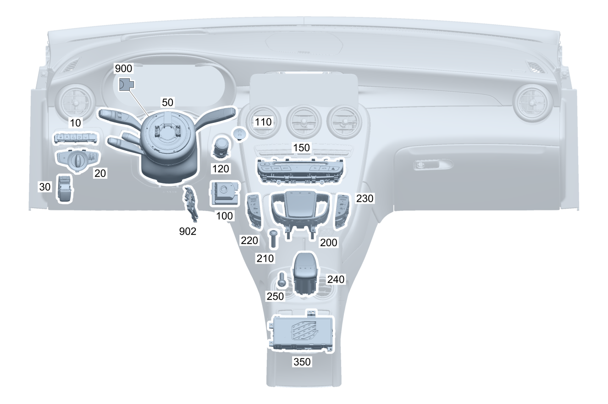

| № | Артикул | Название | Кол. | Примечание | Ограничение |
|---|---|---|---|---|---|
| 10 | A 205 905 78 09 | Блок выключателей (SWITCH BLOCK) | 1 | Вспомогательные системы | (806/807/808/809)+(238/476) |
| 10 | A 205 905 79 09 | Блок выключателей (SWITCH BLOCK) | 1 | Вспомогательные системы | (806/807/808/809)+(238/476)+266 |
| 10 | A 205 905 80 09 | Блок выключателей (SWITCH BLOCK) | 1 | Вспомогательные системы | (806/807/808/809)+235+489 |
| 10 | A 205 905 81 09 | Блок выключателей | 1 | Вспомогательные системы | (806/807/808/809)+(235/235+489)+(238/476) |
| 10 | A 205 905 82 09 | Блок выключателей (SWITCH BLOCK) | 1 | Вспомогательные системы | (806/807/808/809)+(235/235+489)+(238/476)+266 |
| 10 | A 205 905 83 09 | Блок выключателей (SWITCH BLOCK) | 1 | Вспомогательные системы | (806/807/808/809)+501+(235/235+489) |
| 10 | A 205 905 84 09 | Блок выключателей (SWITCH BLOCK) | 1 | Вспомогательные системы | (806/807/808/809)+501+(235/235+489)+(238/476) |
| 10 | A 205 905 85 09 | Блок выключателей (SWITCH BLOCK) | 1 | Вспомогательные системы | (806/807/808/809)+501+(235/235+489)+(238/476)+266 |
| 10 | A 205 905 86 09 | Блок выключателей (SWITCH BLOCK) | 1 | Вспомогательные системы | (806/807/808/809)+463 |
| 10 | A 205 905 87 09 | Блок выключателей (SWITCH BLOCK) | 1 | Вспомогательные системы | (806/807/808/809)+463+(238/476) |
| 10 | A 205 905 88 09 | Блок выключателей (SWITCH BLOCK) | 1 | Вспомогательные системы | (806/807/808/809)+463+(238/476)+266 |
| 10 | A 205 905 89 09 | Блок выключателей (SWITCH BLOCK) | 1 | Вспомогательные системы | (806/807/808/809)+463+(235/235+489) |
| 10 | A 205 905 90 09 | Блок выключателей (SWITCH BLOCK) | 1 | Вспомогательные системы | 463+(235/235+489)+(238/476) |
| 10 | A 205 905 91 09 | Блок выключателей (SWITCH BLOCK) | 1 | Вспомогательные системы | (806/807/808/809)+463+(235/235+489)+(238/476)+266 |
| 10 | A 205 905 92 09 | Блок выключателей (SWITCH BLOCK) | 1 | Вспомогательные системы | (806/807/808/809)+463+501+(235/235+489) |
| 10 | A 205 905 93 09 | Блок выключателей (SWITCH BLOCK) | 1 | Вспомогательные системы | (806/807/808/809)+463+501+(235/235+489)+(238/476) |
| 10 | A 205 905 94 09 | Блок выключателей (SWITCH BLOCK) | 1 | Вспомогательные системы | (806/807/808/809)+463+501+(235/235+489)+(238/476)+266 |
| 20 | A 205 905 19 10 | Переключатель света | 1 | -(460/494) | |
| 20 | A 205 905 18 10 | Переключатель света (LIGHT SWITCH) | 1 | (489/631/632/640/641/642)+-(460/494) | |
| 20 | A 205 905 70 07 | Переключатель света (LIGHT SWITCH) | 1 | (806/807+-057)+(460/494) | |
| 20 | A 205 905 18 10 | Переключатель света (LIGHT SWITCH) | 1 | 460/494 | |
| 20 | A 205 905 18 10 | Переключатель света (LIGHT SWITCH) | 1 | (632/640)+(494/460) | |
| 20 | A 205 905 70 07 | Переключатель света (LIGHT SWITCH) | 1 | (806/807+-057)+(632/640)+(494/460) | |
| 30 | A 205 905 66 03 | Блок выключателей (SWITCH BLOCK) | 1 | Электронный стояночный тормоз | |
| 30 | A 205 905 15 16 | Блок выключателей (SWITCH BLOCK) | 1 | Электронный стояночный тормоз | |
| 50 | A 205 900 63 12 | Блок управления | 1 | Блок подрулевых переключателей; KOSTAL [672] ДЕТАЛЬ ПОСЛЕ УСТАН.ПРОВЕРИТЬ НА АКТУАЛЬНОСТЬ "ПРОШИВНОГО" ПО [004000] ВНИМАНИЕ! УЧИТЫВАТЬ ПРОИЗВОДИТЕЛЯ СНЯТОЙ ДЕТАЛИ. ЗАМЕНА ТОЛЬКО НА МОДУЛЬ РУЛ.КОЛОНКИ С ПОДРУЛ.ПЕРЕКЛЮЧ. ТОГО ЖЕ ПРОИЗВОДИТЕЛЯ. | (807/808/809) |
| 50 | A 205 900 01 23 | Блок управления (CONTROL UNIT) | 1 | Блок подрулевых переключателей; VALEO [672] ДЕТАЛЬ ПОСЛЕ УСТАН.ПРОВЕРИТЬ НА АКТУАЛЬНОСТЬ "ПРОШИВНОГО" ПО [004000] ВНИМАНИЕ! УЧИТЫВАТЬ ПРОИЗВОДИТЕЛЯ СНЯТОЙ ДЕТАЛИ. ЗАМЕНА ТОЛЬКО НА МОДУЛЬ РУЛ.КОЛОНКИ С ПОДРУЛ.ПЕРЕКЛЮЧ. ТОГО ЖЕ ПРОИЗВОДИТЕЛЯ. | (807/808/809) |
| 50 | A 205 900 28 38 | Блок управления | 1 | Блок подрулевых переключателей; VALEO [672] ДЕТАЛЬ ПОСЛЕ УСТАН.ПРОВЕРИТЬ НА АКТУАЛЬНОСТЬ "ПРОШИВНОГО" ПО [004000] ВНИМАНИЕ! УЧИТЫВАТЬ ПРОИЗВОДИТЕЛЯ СНЯТОЙ ДЕТАЛИ. ЗАМЕНА ТОЛЬКО НА МОДУЛЬ РУЛ.КОЛОНКИ С ПОДРУЛ.ПЕРЕКЛЮЧ. ТОГО ЖЕ ПРОИЗВОДИТЕЛЯ. | (807/808/809) |
| 50 | A 205 900 01 39 | Блок управления | 1 | Блок подрулевых переключателей; VALEO [672] ДЕТАЛЬ ПОСЛЕ УСТАН.ПРОВЕРИТЬ НА АКТУАЛЬНОСТЬ "ПРОШИВНОГО" ПО [004000] ВНИМАНИЕ! УЧИТЫВАТЬ ПРОИЗВОДИТЕЛЯ СНЯТОЙ ДЕТАЛИ. ЗАМЕНА ТОЛЬКО НА МОДУЛЬ РУЛ.КОЛОНКИ С ПОДРУЛ.ПЕРЕКЛЮЧ. ТОГО ЖЕ ПРОИЗВОДИТЕЛЯ. | (807/808/809) |
| 50 | A 205 900 65 12 | Блок управления | 1 | Блок подрулевых переключателей; KOSTAL [672] ДЕТАЛЬ ПОСЛЕ УСТАН.ПРОВЕРИТЬ НА АКТУАЛЬНОСТЬ "ПРОШИВНОГО" ПО [697] ДЕТАЛЬ ПОСТАВЛЯЕТСЯ ТОЛЬКО/ИЛИ ТАКЖЕ КАК ЗАП.ЧАСТЬ [004000] ВНИМАНИЕ! УЧИТЫВАТЬ ПРОИЗВОДИТЕЛЯ СНЯТОЙ ДЕТАЛИ. ЗАМЕНА ТОЛЬКО НА МОДУЛЬ РУЛ.КОЛОНКИ С ПОДРУЛ.ПЕРЕКЛЮЧ. ТОГО ЖЕ ПРОИЗВОДИТЕЛЯ. | (807/808/809)+(238/476)+-9O1 |
| 50 | A 205 900 03 23 | Блок управления (CONTROL UNIT) | 1 | Блок подрулевых переключателей; VALEO [672] ДЕТАЛЬ ПОСЛЕ УСТАН.ПРОВЕРИТЬ НА АКТУАЛЬНОСТЬ "ПРОШИВНОГО" ПО [004000] ВНИМАНИЕ! УЧИТЫВАТЬ ПРОИЗВОДИТЕЛЯ СНЯТОЙ ДЕТАЛИ. ЗАМЕНА ТОЛЬКО НА МОДУЛЬ РУЛ.КОЛОНКИ С ПОДРУЛ.ПЕРЕКЛЮЧ. ТОГО ЖЕ ПРОИЗВОДИТЕЛЯ. | (807/808/809)+(238/476)+-9O1 |
| 50 | A 205 900 30 38 | Блок управления | 1 | Блок подрулевых переключателей; VALEO [672] ДЕТАЛЬ ПОСЛЕ УСТАН.ПРОВЕРИТЬ НА АКТУАЛЬНОСТЬ "ПРОШИВНОГО" ПО [004000] ВНИМАНИЕ! УЧИТЫВАТЬ ПРОИЗВОДИТЕЛЯ СНЯТОЙ ДЕТАЛИ. ЗАМЕНА ТОЛЬКО НА МОДУЛЬ РУЛ.КОЛОНКИ С ПОДРУЛ.ПЕРЕКЛЮЧ. ТОГО ЖЕ ПРОИЗВОДИТЕЛЯ. | (807/808/809)+(238/476) |
| 50 | A 205 900 03 39 | Блок управления | 1 | Блок подрулевых переключателей; VALEO [672] ДЕТАЛЬ ПОСЛЕ УСТАН.ПРОВЕРИТЬ НА АКТУАЛЬНОСТЬ "ПРОШИВНОГО" ПО [004000] ВНИМАНИЕ! УЧИТЫВАТЬ ПРОИЗВОДИТЕЛЯ СНЯТОЙ ДЕТАЛИ. ЗАМЕНА ТОЛЬКО НА МОДУЛЬ РУЛ.КОЛОНКИ С ПОДРУЛ.ПЕРЕКЛЮЧ. ТОГО ЖЕ ПРОИЗВОДИТЕЛЯ. | (807/808/809)+(238/476) |
| 50 | A 205 900 67 12 | Блок управления (CONTROL UNIT) | 1 | Блок подрулевых переключателей; KOSTAL [672] ДЕТАЛЬ ПОСЛЕ УСТАН.ПРОВЕРИТЬ НА АКТУАЛЬНОСТЬ "ПРОШИВНОГО" ПО [004000] ВНИМАНИЕ! УЧИТЫВАТЬ ПРОИЗВОДИТЕЛЯ СНЯТОЙ ДЕТАЛИ. ЗАМЕНА ТОЛЬКО НА МОДУЛЬ РУЛ.КОЛОНКИ С ПОДРУЛ.ПЕРЕКЛЮЧ. ТОГО ЖЕ ПРОИЗВОДИТЕЛЯ. | (807/808/809)+440+-9O1 |
| 50 | A 205 900 05 23 | Блок управления (CONTROL UNIT) | 1 | Блок подрулевых переключателей; VALEO [672] ДЕТАЛЬ ПОСЛЕ УСТАН.ПРОВЕРИТЬ НА АКТУАЛЬНОСТЬ "ПРОШИВНОГО" ПО [004000] ВНИМАНИЕ! УЧИТЫВАТЬ ПРОИЗВОДИТЕЛЯ СНЯТОЙ ДЕТАЛИ. ЗАМЕНА ТОЛЬКО НА МОДУЛЬ РУЛ.КОЛОНКИ С ПОДРУЛ.ПЕРЕКЛЮЧ. ТОГО ЖЕ ПРОИЗВОДИТЕЛЯ. | (807/808/809)+440+-9O1 |
| 50 | A 205 900 32 38 | Блок управления | 1 | Блок подрулевых переключателей; VALEO [672] ДЕТАЛЬ ПОСЛЕ УСТАН.ПРОВЕРИТЬ НА АКТУАЛЬНОСТЬ "ПРОШИВНОГО" ПО [004000] ВНИМАНИЕ! УЧИТЫВАТЬ ПРОИЗВОДИТЕЛЯ СНЯТОЙ ДЕТАЛИ. ЗАМЕНА ТОЛЬКО НА МОДУЛЬ РУЛ.КОЛОНКИ С ПОДРУЛ.ПЕРЕКЛЮЧ. ТОГО ЖЕ ПРОИЗВОДИТЕЛЯ. | (807/808/809)+440 |
| 50 | A 205 900 05 39 | Блок управления | 1 | Блок подрулевых переключателей; VALEO [672] ДЕТАЛЬ ПОСЛЕ УСТАН.ПРОВЕРИТЬ НА АКТУАЛЬНОСТЬ "ПРОШИВНОГО" ПО [004000] ВНИМАНИЕ! УЧИТЫВАТЬ ПРОИЗВОДИТЕЛЯ СНЯТОЙ ДЕТАЛИ. ЗАМЕНА ТОЛЬКО НА МОДУЛЬ РУЛ.КОЛОНКИ С ПОДРУЛ.ПЕРЕКЛЮЧ. ТОГО ЖЕ ПРОИЗВОДИТЕЛЯ. | (807/808/809)+440 |
| 50 | A 205 900 69 12 | Блок управления | 1 | Блок подрулевых переключателей; KOSTAL [672] ДЕТАЛЬ ПОСЛЕ УСТАН.ПРОВЕРИТЬ НА АКТУАЛЬНОСТЬ "ПРОШИВНОГО" ПО [004000] ВНИМАНИЕ! УЧИТЫВАТЬ ПРОИЗВОДИТЕЛЯ СНЯТОЙ ДЕТАЛИ. ЗАМЕНА ТОЛЬКО НА МОДУЛЬ РУЛ.КОЛОНКИ С ПОДРУЛ.ПЕРЕКЛЮЧ. ТОГО ЖЕ ПРОИЗВОДИТЕЛЯ. | (807/808/809)+(233/239)+-9O1 |
| 50 | A 205 900 07 23 | Блок управления (CONTROL UNIT) | 1 | Блок подрулевых переключателей; VALEO [672] ДЕТАЛЬ ПОСЛЕ УСТАН.ПРОВЕРИТЬ НА АКТУАЛЬНОСТЬ "ПРОШИВНОГО" ПО [004000] ВНИМАНИЕ! УЧИТЫВАТЬ ПРОИЗВОДИТЕЛЯ СНЯТОЙ ДЕТАЛИ. ЗАМЕНА ТОЛЬКО НА МОДУЛЬ РУЛ.КОЛОНКИ С ПОДРУЛ.ПЕРЕКЛЮЧ. ТОГО ЖЕ ПРОИЗВОДИТЕЛЯ. | (807/808/809)+(233/239)+-9O1 |
| 50 | A 205 900 34 38 | Блок управления | 1 | Блок подрулевых переключателей; VALEO [672] ДЕТАЛЬ ПОСЛЕ УСТАН.ПРОВЕРИТЬ НА АКТУАЛЬНОСТЬ "ПРОШИВНОГО" ПО [004000] ВНИМАНИЕ! УЧИТЫВАТЬ ПРОИЗВОДИТЕЛЯ СНЯТОЙ ДЕТАЛИ. ЗАМЕНА ТОЛЬКО НА МОДУЛЬ РУЛ.КОЛОНКИ С ПОДРУЛ.ПЕРЕКЛЮЧ. ТОГО ЖЕ ПРОИЗВОДИТЕЛЯ. | (807/808/809)+(233/239) |
| 50 | A 205 900 07 39 | Блок управления | 1 | Блок подрулевых переключателей; VALEO [672] ДЕТАЛЬ ПОСЛЕ УСТАН.ПРОВЕРИТЬ НА АКТУАЛЬНОСТЬ "ПРОШИВНОГО" ПО [004000] ВНИМАНИЕ! УЧИТЫВАТЬ ПРОИЗВОДИТЕЛЯ СНЯТОЙ ДЕТАЛИ. ЗАМЕНА ТОЛЬКО НА МОДУЛЬ РУЛ.КОЛОНКИ С ПОДРУЛ.ПЕРЕКЛЮЧ. ТОГО ЖЕ ПРОИЗВОДИТЕЛЯ. | (807/808/809)+(233/239) |
| 50 | A 205 900 71 12 | Блок управления | 1 | Блок подрулевых переключателей; KOSTAL [672] ДЕТАЛЬ ПОСЛЕ УСТАН.ПРОВЕРИТЬ НА АКТУАЛЬНОСТЬ "ПРОШИВНОГО" ПО [004000] ВНИМАНИЕ! УЧИТЫВАТЬ ПРОИЗВОДИТЕЛЯ СНЯТОЙ ДЕТАЛИ. ЗАМЕНА ТОЛЬКО НА МОДУЛЬ РУЛ.КОЛОНКИ С ПОДРУЛ.ПЕРЕКЛЮЧ. ТОГО ЖЕ ПРОИЗВОДИТЕЛЯ. | (807/808/809)+(238/476)+440+-9O1 |
| 50 | A 205 900 09 23 | Блок управления (CONTROL UNIT) | 1 | Блок подрулевых переключателей; VALEO [672] ДЕТАЛЬ ПОСЛЕ УСТАН.ПРОВЕРИТЬ НА АКТУАЛЬНОСТЬ "ПРОШИВНОГО" ПО [004000] ВНИМАНИЕ! УЧИТЫВАТЬ ПРОИЗВОДИТЕЛЯ СНЯТОЙ ДЕТАЛИ. ЗАМЕНА ТОЛЬКО НА МОДУЛЬ РУЛ.КОЛОНКИ С ПОДРУЛ.ПЕРЕКЛЮЧ. ТОГО ЖЕ ПРОИЗВОДИТЕЛЯ. | (807/808/809)+(238/476)+440+-9O1 |
| 50 | A 205 900 36 38 | Блок управления | 1 | Блок подрулевых переключателей; VALEO [672] ДЕТАЛЬ ПОСЛЕ УСТАН.ПРОВЕРИТЬ НА АКТУАЛЬНОСТЬ "ПРОШИВНОГО" ПО [004000] ВНИМАНИЕ! УЧИТЫВАТЬ ПРОИЗВОДИТЕЛЯ СНЯТОЙ ДЕТАЛИ. ЗАМЕНА ТОЛЬКО НА МОДУЛЬ РУЛ.КОЛОНКИ С ПОДРУЛ.ПЕРЕКЛЮЧ. ТОГО ЖЕ ПРОИЗВОДИТЕЛЯ. | (807/808/809)+(238/476)+440 |
| 50 | A 205 900 09 39 | Блок управления | 1 | Блок подрулевых переключателей; VALEO [672] ДЕТАЛЬ ПОСЛЕ УСТАН.ПРОВЕРИТЬ НА АКТУАЛЬНОСТЬ "ПРОШИВНОГО" ПО [004000] ВНИМАНИЕ! УЧИТЫВАТЬ ПРОИЗВОДИТЕЛЯ СНЯТОЙ ДЕТАЛИ. ЗАМЕНА ТОЛЬКО НА МОДУЛЬ РУЛ.КОЛОНКИ С ПОДРУЛ.ПЕРЕКЛЮЧ. ТОГО ЖЕ ПРОИЗВОДИТЕЛЯ. | (807/808/809)+(238/476)+440 |
| 50 | A 205 900 73 12 | Блок управления | 1 | Блок подрулевых переключателей; KOSTAL [672] ДЕТАЛЬ ПОСЛЕ УСТАН.ПРОВЕРИТЬ НА АКТУАЛЬНОСТЬ "ПРОШИВНОГО" ПО [004000] ВНИМАНИЕ! УЧИТЫВАТЬ ПРОИЗВОДИТЕЛЯ СНЯТОЙ ДЕТАЛИ. ЗАМЕНА ТОЛЬКО НА МОДУЛЬ РУЛ.КОЛОНКИ С ПОДРУЛ.ПЕРЕКЛЮЧ. ТОГО ЖЕ ПРОИЗВОДИТЕЛЯ. | (807/808/809)+(233/239)+(238/476)+-9O1 |
| 50 | A 205 900 11 23 | Блок управления (CONTROL UNIT) | 1 | Блок подрулевых переключателей; VALEO [672] ДЕТАЛЬ ПОСЛЕ УСТАН.ПРОВЕРИТЬ НА АКТУАЛЬНОСТЬ "ПРОШИВНОГО" ПО [004000] ВНИМАНИЕ! УЧИТЫВАТЬ ПРОИЗВОДИТЕЛЯ СНЯТОЙ ДЕТАЛИ. ЗАМЕНА ТОЛЬКО НА МОДУЛЬ РУЛ.КОЛОНКИ С ПОДРУЛ.ПЕРЕКЛЮЧ. ТОГО ЖЕ ПРОИЗВОДИТЕЛЯ. | (807/808/809)+(233/239)+(238/476)+-9O1 |
| 50 | A 205 900 38 38 | Блок управления | 1 | Блок подрулевых переключателей; VALEO [672] ДЕТАЛЬ ПОСЛЕ УСТАН.ПРОВЕРИТЬ НА АКТУАЛЬНОСТЬ "ПРОШИВНОГО" ПО [004000] ВНИМАНИЕ! УЧИТЫВАТЬ ПРОИЗВОДИТЕЛЯ СНЯТОЙ ДЕТАЛИ. ЗАМЕНА ТОЛЬКО НА МОДУЛЬ РУЛ.КОЛОНКИ С ПОДРУЛ.ПЕРЕКЛЮЧ. ТОГО ЖЕ ПРОИЗВОДИТЕЛЯ. | (807/808/809)+(233/239)+(238/476) |
| 50 | A 205 900 11 39 | Блок управления | 1 | Блок подрулевых переключателей; VALEO [672] ДЕТАЛЬ ПОСЛЕ УСТАН.ПРОВЕРИТЬ НА АКТУАЛЬНОСТЬ "ПРОШИВНОГО" ПО [004000] ВНИМАНИЕ! УЧИТЫВАТЬ ПРОИЗВОДИТЕЛЯ СНЯТОЙ ДЕТАЛИ. ЗАМЕНА ТОЛЬКО НА МОДУЛЬ РУЛ.КОЛОНКИ С ПОДРУЛ.ПЕРЕКЛЮЧ. ТОГО ЖЕ ПРОИЗВОДИТЕЛЯ. | (807/808/809)+(233/239)+(238/476) |
| 50 | A 205 900 75 12 | Блок управления (CONTROL UNIT) | 1 | Блок подрулевых переключателей; KOSTAL [672] ДЕТАЛЬ ПОСЛЕ УСТАН.ПРОВЕРИТЬ НА АКТУАЛЬНОСТЬ "ПРОШИВНОГО" ПО [004000] ВНИМАНИЕ! УЧИТЫВАТЬ ПРОИЗВОДИТЕЛЯ СНЯТОЙ ДЕТАЛИ. ЗАМЕНА ТОЛЬКО НА МОДУЛЬ РУЛ.КОЛОНКИ С ПОДРУЛ.ПЕРЕКЛЮЧ. ТОГО ЖЕ ПРОИЗВОДИТЕЛЯ. | (807/808/809)+(421/427)+440+-9O1 |
| 50 | A 205 900 13 23 | Блок управления (CONTROL UNIT) | 1 | Блок подрулевых переключателей; VALEO [672] ДЕТАЛЬ ПОСЛЕ УСТАН.ПРОВЕРИТЬ НА АКТУАЛЬНОСТЬ "ПРОШИВНОГО" ПО [004000] ВНИМАНИЕ! УЧИТЫВАТЬ ПРОИЗВОДИТЕЛЯ СНЯТОЙ ДЕТАЛИ. ЗАМЕНА ТОЛЬКО НА МОДУЛЬ РУЛ.КОЛОНКИ С ПОДРУЛ.ПЕРЕКЛЮЧ. ТОГО ЖЕ ПРОИЗВОДИТЕЛЯ. | (807/808/809)+(421/427)+440+-9O1 |
| 50 | A 205 900 40 38 | Блок управления | 1 | Блок подрулевых переключателей; VALEO [672] ДЕТАЛЬ ПОСЛЕ УСТАН.ПРОВЕРИТЬ НА АКТУАЛЬНОСТЬ "ПРОШИВНОГО" ПО [004000] ВНИМАНИЕ! УЧИТЫВАТЬ ПРОИЗВОДИТЕЛЯ СНЯТОЙ ДЕТАЛИ. ЗАМЕНА ТОЛЬКО НА МОДУЛЬ РУЛ.КОЛОНКИ С ПОДРУЛ.ПЕРЕКЛЮЧ. ТОГО ЖЕ ПРОИЗВОДИТЕЛЯ. | (807/808/809)+(421/427)+440+-9O1 |
| 50 | A 205 900 13 39 | Блок управления | 1 | Блок подрулевых переключателей; VALEO [672] ДЕТАЛЬ ПОСЛЕ УСТАН.ПРОВЕРИТЬ НА АКТУАЛЬНОСТЬ "ПРОШИВНОГО" ПО [004000] ВНИМАНИЕ! УЧИТЫВАТЬ ПРОИЗВОДИТЕЛЯ СНЯТОЙ ДЕТАЛИ. ЗАМЕНА ТОЛЬКО НА МОДУЛЬ РУЛ.КОЛОНКИ С ПОДРУЛ.ПЕРЕКЛЮЧ. ТОГО ЖЕ ПРОИЗВОДИТЕЛЯ. | (807/808/809)+(421/427)+440+-9O1 |
| 50 | A 205 900 77 12 | Блок управления | 1 | Блок подрулевых переключателей; KOSTAL [672] ДЕТАЛЬ ПОСЛЕ УСТАН.ПРОВЕРИТЬ НА АКТУАЛЬНОСТЬ "ПРОШИВНОГО" ПО [004000] ВНИМАНИЕ! УЧИТЫВАТЬ ПРОИЗВОДИТЕЛЯ СНЯТОЙ ДЕТАЛИ. ЗАМЕНА ТОЛЬКО НА МОДУЛЬ РУЛ.КОЛОНКИ С ПОДРУЛ.ПЕРЕКЛЮЧ. ТОГО ЖЕ ПРОИЗВОДИТЕЛЯ. | (807/808/809)+(421/427)+(233/239)+-9O1 |
| 50 | A 205 900 15 23 | Блок управления (CONTROL UNIT) | 1 | Блок подрулевых переключателей; VALEO [672] ДЕТАЛЬ ПОСЛЕ УСТАН.ПРОВЕРИТЬ НА АКТУАЛЬНОСТЬ "ПРОШИВНОГО" ПО [004000] ВНИМАНИЕ! УЧИТЫВАТЬ ПРОИЗВОДИТЕЛЯ СНЯТОЙ ДЕТАЛИ. ЗАМЕНА ТОЛЬКО НА МОДУЛЬ РУЛ.КОЛОНКИ С ПОДРУЛ.ПЕРЕКЛЮЧ. ТОГО ЖЕ ПРОИЗВОДИТЕЛЯ. | (807/808/809)+(421/427)+(233/239)+-9O1 |
| 50 | A 205 900 42 38 | Блок управления | 1 | Блок подрулевых переключателей; VALEO [672] ДЕТАЛЬ ПОСЛЕ УСТАН.ПРОВЕРИТЬ НА АКТУАЛЬНОСТЬ "ПРОШИВНОГО" ПО [004000] ВНИМАНИЕ! УЧИТЫВАТЬ ПРОИЗВОДИТЕЛЯ СНЯТОЙ ДЕТАЛИ. ЗАМЕНА ТОЛЬКО НА МОДУЛЬ РУЛ.КОЛОНКИ С ПОДРУЛ.ПЕРЕКЛЮЧ. ТОГО ЖЕ ПРОИЗВОДИТЕЛЯ. | (807/808/809)+(421/427)+(233/239)+-9O1 |
| 50 | A 205 900 15 39 | Блок управления | 1 | Блок подрулевых переключателей; VALEO [672] ДЕТАЛЬ ПОСЛЕ УСТАН.ПРОВЕРИТЬ НА АКТУАЛЬНОСТЬ "ПРОШИВНОГО" ПО [004000] ВНИМАНИЕ! УЧИТЫВАТЬ ПРОИЗВОДИТЕЛЯ СНЯТОЙ ДЕТАЛИ. ЗАМЕНА ТОЛЬКО НА МОДУЛЬ РУЛ.КОЛОНКИ С ПОДРУЛ.ПЕРЕКЛЮЧ. ТОГО ЖЕ ПРОИЗВОДИТЕЛЯ. | (807/808/809)+(421/427)+(233/239)+-9O1 |
| 50 | A 205 900 79 12 | Блок управления (CONTROL UNIT) | 1 | Блок подрулевых переключателей; KOSTAL [672] ДЕТАЛЬ ПОСЛЕ УСТАН.ПРОВЕРИТЬ НА АКТУАЛЬНОСТЬ "ПРОШИВНОГО" ПО [004000] ВНИМАНИЕ! УЧИТЫВАТЬ ПРОИЗВОДИТЕЛЯ СНЯТОЙ ДЕТАЛИ. ЗАМЕНА ТОЛЬКО НА МОДУЛЬ РУЛ.КОЛОНКИ С ПОДРУЛ.ПЕРЕКЛЮЧ. ТОГО ЖЕ ПРОИЗВОДИТЕЛЯ. | (807/808/809)+(421/427)+(238/476)+440+-9O1 |
| 50 | A 205 900 17 23 | Блок управления (CONTROL UNIT) | 1 | Блок подрулевых переключателей; VALEO [672] ДЕТАЛЬ ПОСЛЕ УСТАН.ПРОВЕРИТЬ НА АКТУАЛЬНОСТЬ "ПРОШИВНОГО" ПО [004000] ВНИМАНИЕ! УЧИТЫВАТЬ ПРОИЗВОДИТЕЛЯ СНЯТОЙ ДЕТАЛИ. ЗАМЕНА ТОЛЬКО НА МОДУЛЬ РУЛ.КОЛОНКИ С ПОДРУЛ.ПЕРЕКЛЮЧ. ТОГО ЖЕ ПРОИЗВОДИТЕЛЯ. | (807/808/809)+(421/427)+(238/476)+440+-9O1 |
| 50 | A 205 900 44 38 | Блок управления | 1 | Блок подрулевых переключателей; VALEO [672] ДЕТАЛЬ ПОСЛЕ УСТАН.ПРОВЕРИТЬ НА АКТУАЛЬНОСТЬ "ПРОШИВНОГО" ПО [004000] ВНИМАНИЕ! УЧИТЫВАТЬ ПРОИЗВОДИТЕЛЯ СНЯТОЙ ДЕТАЛИ. ЗАМЕНА ТОЛЬКО НА МОДУЛЬ РУЛ.КОЛОНКИ С ПОДРУЛ.ПЕРЕКЛЮЧ. ТОГО ЖЕ ПРОИЗВОДИТЕЛЯ. | (807/808/809)+(421/427)+(238/476)+440+-9O1 |
| 50 | A 205 900 17 39 | Блок управления | 1 | Блок подрулевых переключателей; VALEO [672] ДЕТАЛЬ ПОСЛЕ УСТАН.ПРОВЕРИТЬ НА АКТУАЛЬНОСТЬ "ПРОШИВНОГО" ПО [004000] ВНИМАНИЕ! УЧИТЫВАТЬ ПРОИЗВОДИТЕЛЯ СНЯТОЙ ДЕТАЛИ. ЗАМЕНА ТОЛЬКО НА МОДУЛЬ РУЛ.КОЛОНКИ С ПОДРУЛ.ПЕРЕКЛЮЧ. ТОГО ЖЕ ПРОИЗВОДИТЕЛЯ. | (807/808/809)+(421/427)+(238/476)+440+-9O1 |
| 50 | A 205 900 81 12 | Блок управления (CONTROL UNIT) | 1 | Блок подрулевых переключателей; KOSTAL [672] ДЕТАЛЬ ПОСЛЕ УСТАН.ПРОВЕРИТЬ НА АКТУАЛЬНОСТЬ "ПРОШИВНОГО" ПО [004000] ВНИМАНИЕ! УЧИТЫВАТЬ ПРОИЗВОДИТЕЛЯ СНЯТОЙ ДЕТАЛИ. ЗАМЕНА ТОЛЬКО НА МОДУЛЬ РУЛ.КОЛОНКИ С ПОДРУЛ.ПЕРЕКЛЮЧ. ТОГО ЖЕ ПРОИЗВОДИТЕЛЯ. | (807/808/809)+(421/427)+(233/239)+(238/476)+-9O1 |
| 50 | A 205 900 19 23 | Блок управления (CONTROL UNIT) | 1 | Блок подрулевых переключателей; VALEO [672] ДЕТАЛЬ ПОСЛЕ УСТАН.ПРОВЕРИТЬ НА АКТУАЛЬНОСТЬ "ПРОШИВНОГО" ПО [004000] ВНИМАНИЕ! УЧИТЫВАТЬ ПРОИЗВОДИТЕЛЯ СНЯТОЙ ДЕТАЛИ. ЗАМЕНА ТОЛЬКО НА МОДУЛЬ РУЛ.КОЛОНКИ С ПОДРУЛ.ПЕРЕКЛЮЧ. ТОГО ЖЕ ПРОИЗВОДИТЕЛЯ. | (807/808/809)+(421/427)+(233/239)+(238/476)+-9O1 |
| 50 | A 205 900 46 38 | Блок управления | 1 | Блок подрулевых переключателей; VALEO [672] ДЕТАЛЬ ПОСЛЕ УСТАН.ПРОВЕРИТЬ НА АКТУАЛЬНОСТЬ "ПРОШИВНОГО" ПО [004000] ВНИМАНИЕ! УЧИТЫВАТЬ ПРОИЗВОДИТЕЛЯ СНЯТОЙ ДЕТАЛИ. ЗАМЕНА ТОЛЬКО НА МОДУЛЬ РУЛ.КОЛОНКИ С ПОДРУЛ.ПЕРЕКЛЮЧ. ТОГО ЖЕ ПРОИЗВОДИТЕЛЯ. | (807/808/809)+(421/427)+(233/239)+(238/476)+-9O1 |
| 50 | A 205 900 19 39 | Блок управления | 1 | Блок подрулевых переключателей; VALEO [672] ДЕТАЛЬ ПОСЛЕ УСТАН.ПРОВЕРИТЬ НА АКТУАЛЬНОСТЬ "ПРОШИВНОГО" ПО [004000] ВНИМАНИЕ! УЧИТЫВАТЬ ПРОИЗВОДИТЕЛЯ СНЯТОЙ ДЕТАЛИ. ЗАМЕНА ТОЛЬКО НА МОДУЛЬ РУЛ.КОЛОНКИ С ПОДРУЛ.ПЕРЕКЛЮЧ. ТОГО ЖЕ ПРОИЗВОДИТЕЛЯ. | (807/808/809)+(421/427)+(233/239)+(238/476)+-9O1 |
| 50 | A 205 900 83 12 | Блок управления (CONTROL UNIT) | 1 | Блок подрулевых переключателей; KOSTAL [672] ДЕТАЛЬ ПОСЛЕ УСТАН.ПРОВЕРИТЬ НА АКТУАЛЬНОСТЬ "ПРОШИВНОГО" ПО [004000] ВНИМАНИЕ! УЧИТЫВАТЬ ПРОИЗВОДИТЕЛЯ СНЯТОЙ ДЕТАЛИ. ЗАМЕНА ТОЛЬКО НА МОДУЛЬ РУЛ.КОЛОНКИ С ПОДРУЛ.ПЕРЕКЛЮЧ. ТОГО ЖЕ ПРОИЗВОДИТЕЛЯ. | (807/808/809)+(421/427)+275+440 |
| 50 | A 205 900 21 23 | Блок управления (CONTROL UNIT) | 1 | Блок подрулевых переключателей; VALEO [672] ДЕТАЛЬ ПОСЛЕ УСТАН.ПРОВЕРИТЬ НА АКТУАЛЬНОСТЬ "ПРОШИВНОГО" ПО [004000] ВНИМАНИЕ! УЧИТЫВАТЬ ПРОИЗВОДИТЕЛЯ СНЯТОЙ ДЕТАЛИ. ЗАМЕНА ТОЛЬКО НА МОДУЛЬ РУЛ.КОЛОНКИ С ПОДРУЛ.ПЕРЕКЛЮЧ. ТОГО ЖЕ ПРОИЗВОДИТЕЛЯ. | (807/808/809)+(421/427)+275+440 |
| 50 | A 205 900 48 38 | Блок управления | 1 | Блок подрулевых переключателей; VALEO [672] ДЕТАЛЬ ПОСЛЕ УСТАН.ПРОВЕРИТЬ НА АКТУАЛЬНОСТЬ "ПРОШИВНОГО" ПО [004000] ВНИМАНИЕ! УЧИТЫВАТЬ ПРОИЗВОДИТЕЛЯ СНЯТОЙ ДЕТАЛИ. ЗАМЕНА ТОЛЬКО НА МОДУЛЬ РУЛ.КОЛОНКИ С ПОДРУЛ.ПЕРЕКЛЮЧ. ТОГО ЖЕ ПРОИЗВОДИТЕЛЯ. | (807/808/809)+(421/427)+275+440 |
| 50 | A 205 900 21 39 | Блок управления | 1 | Блок подрулевых переключателей; VALEO [672] ДЕТАЛЬ ПОСЛЕ УСТАН.ПРОВЕРИТЬ НА АКТУАЛЬНОСТЬ "ПРОШИВНОГО" ПО [004000] ВНИМАНИЕ! УЧИТЫВАТЬ ПРОИЗВОДИТЕЛЯ СНЯТОЙ ДЕТАЛИ. ЗАМЕНА ТОЛЬКО НА МОДУЛЬ РУЛ.КОЛОНКИ С ПОДРУЛ.ПЕРЕКЛЮЧ. ТОГО ЖЕ ПРОИЗВОДИТЕЛЯ. | (807/808/809)+(421/427)+275+440 |
| 50 | A 205 900 85 12 | Блок управления (CONTROL UNIT) | 1 | Блок подрулевых переключателей; KOSTAL [672] ДЕТАЛЬ ПОСЛЕ УСТАН.ПРОВЕРИТЬ НА АКТУАЛЬНОСТЬ "ПРОШИВНОГО" ПО [004000] ВНИМАНИЕ! УЧИТЫВАТЬ ПРОИЗВОДИТЕЛЯ СНЯТОЙ ДЕТАЛИ. ЗАМЕНА ТОЛЬКО НА МОДУЛЬ РУЛ.КОЛОНКИ С ПОДРУЛ.ПЕРЕКЛЮЧ. ТОГО ЖЕ ПРОИЗВОДИТЕЛЯ. | (807/808/809)+(421/427)+(233/239)+275 |
| 50 | A 205 900 23 23 | Блок управления (CONTROL UNIT) | 1 | Блок подрулевых переключателей; VALEO [672] ДЕТАЛЬ ПОСЛЕ УСТАН.ПРОВЕРИТЬ НА АКТУАЛЬНОСТЬ "ПРОШИВНОГО" ПО [004000] ВНИМАНИЕ! УЧИТЫВАТЬ ПРОИЗВОДИТЕЛЯ СНЯТОЙ ДЕТАЛИ. ЗАМЕНА ТОЛЬКО НА МОДУЛЬ РУЛ.КОЛОНКИ С ПОДРУЛ.ПЕРЕКЛЮЧ. ТОГО ЖЕ ПРОИЗВОДИТЕЛЯ. | (807/808/809)+(421/427)+(233/239)+275 |
| 50 | A 205 900 50 38 | Блок управления | 1 | Блок подрулевых переключателей; VALEO [672] ДЕТАЛЬ ПОСЛЕ УСТАН.ПРОВЕРИТЬ НА АКТУАЛЬНОСТЬ "ПРОШИВНОГО" ПО [004000] ВНИМАНИЕ! УЧИТЫВАТЬ ПРОИЗВОДИТЕЛЯ СНЯТОЙ ДЕТАЛИ. ЗАМЕНА ТОЛЬКО НА МОДУЛЬ РУЛ.КОЛОНКИ С ПОДРУЛ.ПЕРЕКЛЮЧ. ТОГО ЖЕ ПРОИЗВОДИТЕЛЯ. | (807/808/809)+(421/427)+(233/239)+275 |
| 50 | A 205 900 23 39 | Блок управления | 1 | Блок подрулевых переключателей; VALEO [672] ДЕТАЛЬ ПОСЛЕ УСТАН.ПРОВЕРИТЬ НА АКТУАЛЬНОСТЬ "ПРОШИВНОГО" ПО [004000] ВНИМАНИЕ! УЧИТЫВАТЬ ПРОИЗВОДИТЕЛЯ СНЯТОЙ ДЕТАЛИ. ЗАМЕНА ТОЛЬКО НА МОДУЛЬ РУЛ.КОЛОНКИ С ПОДРУЛ.ПЕРЕКЛЮЧ. ТОГО ЖЕ ПРОИЗВОДИТЕЛЯ. | (807/808/809)+(421/427)+(233/239)+275 |
| 50 | A 205 900 87 12 | Блок управления (CONTROL UNIT) | 1 | Блок подрулевых переключателей; KOSTAL [672] ДЕТАЛЬ ПОСЛЕ УСТАН.ПРОВЕРИТЬ НА АКТУАЛЬНОСТЬ "ПРОШИВНОГО" ПО [004000] ВНИМАНИЕ! УЧИТЫВАТЬ ПРОИЗВОДИТЕЛЯ СНЯТОЙ ДЕТАЛИ. ЗАМЕНА ТОЛЬКО НА МОДУЛЬ РУЛ.КОЛОНКИ С ПОДРУЛ.ПЕРЕКЛЮЧ. ТОГО ЖЕ ПРОИЗВОДИТЕЛЯ. | (807/808/809)+(421/427)+(238/476)+275+440 |
| 50 | A 205 900 25 23 | Блок управления (CONTROL UNIT) | 1 | Блок подрулевых переключателей; VALEO [672] ДЕТАЛЬ ПОСЛЕ УСТАН.ПРОВЕРИТЬ НА АКТУАЛЬНОСТЬ "ПРОШИВНОГО" ПО [004000] ВНИМАНИЕ! УЧИТЫВАТЬ ПРОИЗВОДИТЕЛЯ СНЯТОЙ ДЕТАЛИ. ЗАМЕНА ТОЛЬКО НА МОДУЛЬ РУЛ.КОЛОНКИ С ПОДРУЛ.ПЕРЕКЛЮЧ. ТОГО ЖЕ ПРОИЗВОДИТЕЛЯ. | (807/808/809)+(421/427)+(238/476)+275+440 |
| 50 | A 205 900 52 38 | Блок управления | 1 | Блок подрулевых переключателей; VALEO [672] ДЕТАЛЬ ПОСЛЕ УСТАН.ПРОВЕРИТЬ НА АКТУАЛЬНОСТЬ "ПРОШИВНОГО" ПО [004000] ВНИМАНИЕ! УЧИТЫВАТЬ ПРОИЗВОДИТЕЛЯ СНЯТОЙ ДЕТАЛИ. ЗАМЕНА ТОЛЬКО НА МОДУЛЬ РУЛ.КОЛОНКИ С ПОДРУЛ.ПЕРЕКЛЮЧ. ТОГО ЖЕ ПРОИЗВОДИТЕЛЯ. | (807/808/809)+(421/427)+(238/476)+275+440 |
| 50 | A 205 900 25 39 | Блок управления | 1 | Блок подрулевых переключателей; VALEO [672] ДЕТАЛЬ ПОСЛЕ УСТАН.ПРОВЕРИТЬ НА АКТУАЛЬНОСТЬ "ПРОШИВНОГО" ПО [004000] ВНИМАНИЕ! УЧИТЫВАТЬ ПРОИЗВОДИТЕЛЯ СНЯТОЙ ДЕТАЛИ. ЗАМЕНА ТОЛЬКО НА МОДУЛЬ РУЛ.КОЛОНКИ С ПОДРУЛ.ПЕРЕКЛЮЧ. ТОГО ЖЕ ПРОИЗВОДИТЕЛЯ. | (807/808/809)+(421/427)+(238/476)+275+440 |
| 50 | A 205 900 89 12 | Блок управления (CONTROL UNIT) | 1 | Блок подрулевых переключателей; KOSTAL [672] ДЕТАЛЬ ПОСЛЕ УСТАН.ПРОВЕРИТЬ НА АКТУАЛЬНОСТЬ "ПРОШИВНОГО" ПО [004000] ВНИМАНИЕ! УЧИТЫВАТЬ ПРОИЗВОДИТЕЛЯ СНЯТОЙ ДЕТАЛИ. ЗАМЕНА ТОЛЬКО НА МОДУЛЬ РУЛ.КОЛОНКИ С ПОДРУЛ.ПЕРЕКЛЮЧ. ТОГО ЖЕ ПРОИЗВОДИТЕЛЯ. | (807/808/809)+(421/427)+(233/239)+(238/476)+275 |
| 50 | A 205 900 27 23 | Блок управления (CONTROL UNIT) | 1 | Блок подрулевых переключателей; VALEO [672] ДЕТАЛЬ ПОСЛЕ УСТАН.ПРОВЕРИТЬ НА АКТУАЛЬНОСТЬ "ПРОШИВНОГО" ПО [004000] ВНИМАНИЕ! УЧИТЫВАТЬ ПРОИЗВОДИТЕЛЯ СНЯТОЙ ДЕТАЛИ. ЗАМЕНА ТОЛЬКО НА МОДУЛЬ РУЛ.КОЛОНКИ С ПОДРУЛ.ПЕРЕКЛЮЧ. ТОГО ЖЕ ПРОИЗВОДИТЕЛЯ. | (807/808/809)+(421/427)+(233/239)+(238/476)+275 |
| 50 | A 205 900 54 38 | Блок управления | 1 | Блок подрулевых переключателей; VALEO [672] ДЕТАЛЬ ПОСЛЕ УСТАН.ПРОВЕРИТЬ НА АКТУАЛЬНОСТЬ "ПРОШИВНОГО" ПО [004000] ВНИМАНИЕ! УЧИТЫВАТЬ ПРОИЗВОДИТЕЛЯ СНЯТОЙ ДЕТАЛИ. ЗАМЕНА ТОЛЬКО НА МОДУЛЬ РУЛ.КОЛОНКИ С ПОДРУЛ.ПЕРЕКЛЮЧ. ТОГО ЖЕ ПРОИЗВОДИТЕЛЯ. | (807/808/809)+(421/427)+(233/239)+(238/476)+275 |
| 50 | A 205 900 27 39 | Блок управления | 1 | Блок подрулевых переключателей; VALEO [672] ДЕТАЛЬ ПОСЛЕ УСТАН.ПРОВЕРИТЬ НА АКТУАЛЬНОСТЬ "ПРОШИВНОГО" ПО [004000] ВНИМАНИЕ! УЧИТЫВАТЬ ПРОИЗВОДИТЕЛЯ СНЯТОЙ ДЕТАЛИ. ЗАМЕНА ТОЛЬКО НА МОДУЛЬ РУЛ.КОЛОНКИ С ПОДРУЛ.ПЕРЕКЛЮЧ. ТОГО ЖЕ ПРОИЗВОДИТЕЛЯ. | (807/808/809)+(421/427)+(233/239)+(238/476)+275 |
| 50 | A 205 900 67 08 | Блок управления | 1 | Блок подрулевых переключателей; KOSTAL [672] ДЕТАЛЬ ПОСЛЕ УСТАН.ПРОВЕРИТЬ НА АКТУАЛЬНОСТЬ "ПРОШИВНОГО" ПО [004000] ВНИМАНИЕ! УЧИТЫВАТЬ ПРОИЗВОДИТЕЛЯ СНЯТОЙ ДЕТАЛИ. ЗАМЕНА ТОЛЬКО НА МОДУЛЬ РУЛ.КОЛОНКИ С ПОДРУЛ.ПЕРЕКЛЮЧ. ТОГО ЖЕ ПРОИЗВОДИТЕЛЯ. | (807/808/809)+443+(421/427)+275+440 |
| 50 | A 205 900 53 23 | Блок управления (CONTROL UNIT) | 1 | Блок подрулевых переключателей; VALEO [672] ДЕТАЛЬ ПОСЛЕ УСТАН.ПРОВЕРИТЬ НА АКТУАЛЬНОСТЬ "ПРОШИВНОГО" ПО [004000] ВНИМАНИЕ! УЧИТЫВАТЬ ПРОИЗВОДИТЕЛЯ СНЯТОЙ ДЕТАЛИ. ЗАМЕНА ТОЛЬКО НА МОДУЛЬ РУЛ.КОЛОНКИ С ПОДРУЛ.ПЕРЕКЛЮЧ. ТОГО ЖЕ ПРОИЗВОДИТЕЛЯ. | (807/808/809)+443+(421/427)+275+440 |
| 50 | A 205 900 80 38 | Блок управления | 1 | Блок подрулевых переключателей; VALEO [672] ДЕТАЛЬ ПОСЛЕ УСТАН.ПРОВЕРИТЬ НА АКТУАЛЬНОСТЬ "ПРОШИВНОГО" ПО [004000] ВНИМАНИЕ! УЧИТЫВАТЬ ПРОИЗВОДИТЕЛЯ СНЯТОЙ ДЕТАЛИ. ЗАМЕНА ТОЛЬКО НА МОДУЛЬ РУЛ.КОЛОНКИ С ПОДРУЛ.ПЕРЕКЛЮЧ. ТОГО ЖЕ ПРОИЗВОДИТЕЛЯ. | (807/808/809)+443+(421/427)+275+440 |
| 50 | A 205 900 53 39 | Блок управления | 1 | Блок подрулевых переключателей; VALEO [672] ДЕТАЛЬ ПОСЛЕ УСТАН.ПРОВЕРИТЬ НА АКТУАЛЬНОСТЬ "ПРОШИВНОГО" ПО [004000] ВНИМАНИЕ! УЧИТЫВАТЬ ПРОИЗВОДИТЕЛЯ СНЯТОЙ ДЕТАЛИ. ЗАМЕНА ТОЛЬКО НА МОДУЛЬ РУЛ.КОЛОНКИ С ПОДРУЛ.ПЕРЕКЛЮЧ. ТОГО ЖЕ ПРОИЗВОДИТЕЛЯ. | (807/808/809)+443+(421/427)+275+440 |
| 50 | A 205 900 69 08 | Блок управления (CONTROL UNIT) | 1 | Блок подрулевых переключателей; KOSTAL [672] ДЕТАЛЬ ПОСЛЕ УСТАН.ПРОВЕРИТЬ НА АКТУАЛЬНОСТЬ "ПРОШИВНОГО" ПО [004000] ВНИМАНИЕ! УЧИТЫВАТЬ ПРОИЗВОДИТЕЛЯ СНЯТОЙ ДЕТАЛИ. ЗАМЕНА ТОЛЬКО НА МОДУЛЬ РУЛ.КОЛОНКИ С ПОДРУЛ.ПЕРЕКЛЮЧ. ТОГО ЖЕ ПРОИЗВОДИТЕЛЯ. | (807/808/809)+443+(421/427)+(233/239)+275 |
| 50 | A 205 900 55 23 | Блок управления (CONTROL UNIT) | 1 | Блок подрулевых переключателей; VALEO [672] ДЕТАЛЬ ПОСЛЕ УСТАН.ПРОВЕРИТЬ НА АКТУАЛЬНОСТЬ "ПРОШИВНОГО" ПО [004000] ВНИМАНИЕ! УЧИТЫВАТЬ ПРОИЗВОДИТЕЛЯ СНЯТОЙ ДЕТАЛИ. ЗАМЕНА ТОЛЬКО НА МОДУЛЬ РУЛ.КОЛОНКИ С ПОДРУЛ.ПЕРЕКЛЮЧ. ТОГО ЖЕ ПРОИЗВОДИТЕЛЯ. | (807/808/809)+443+(421/427)+(233/239)+275 |
| 50 | A 205 900 82 38 | Блок управления | 1 | Блок подрулевых переключателей; VALEO [672] ДЕТАЛЬ ПОСЛЕ УСТАН.ПРОВЕРИТЬ НА АКТУАЛЬНОСТЬ "ПРОШИВНОГО" ПО [004000] ВНИМАНИЕ! УЧИТЫВАТЬ ПРОИЗВОДИТЕЛЯ СНЯТОЙ ДЕТАЛИ. ЗАМЕНА ТОЛЬКО НА МОДУЛЬ РУЛ.КОЛОНКИ С ПОДРУЛ.ПЕРЕКЛЮЧ. ТОГО ЖЕ ПРОИЗВОДИТЕЛЯ. | (807/808/809)+443+(421/427)+(233/239)+275 |
| 50 | A 205 900 55 39 | Блок управления | 1 | Блок подрулевых переключателей; VALEO [672] ДЕТАЛЬ ПОСЛЕ УСТАН.ПРОВЕРИТЬ НА АКТУАЛЬНОСТЬ "ПРОШИВНОГО" ПО [004000] ВНИМАНИЕ! УЧИТЫВАТЬ ПРОИЗВОДИТЕЛЯ СНЯТОЙ ДЕТАЛИ. ЗАМЕНА ТОЛЬКО НА МОДУЛЬ РУЛ.КОЛОНКИ С ПОДРУЛ.ПЕРЕКЛЮЧ. ТОГО ЖЕ ПРОИЗВОДИТЕЛЯ. | (807/808/809)+443+(421/427)+(233/239)+275 |
| 50 | A 205 900 71 08 | Блок управления (CONTROL UNIT) | 1 | Блок подрулевых переключателей; KOSTAL [672] ДЕТАЛЬ ПОСЛЕ УСТАН.ПРОВЕРИТЬ НА АКТУАЛЬНОСТЬ "ПРОШИВНОГО" ПО [004000] ВНИМАНИЕ! УЧИТЫВАТЬ ПРОИЗВОДИТЕЛЯ СНЯТОЙ ДЕТАЛИ. ЗАМЕНА ТОЛЬКО НА МОДУЛЬ РУЛ.КОЛОНКИ С ПОДРУЛ.ПЕРЕКЛЮЧ. ТОГО ЖЕ ПРОИЗВОДИТЕЛЯ. | (807/808/809)+443+(421/427)+(238/476)+275+440 |
| 50 | A 205 900 57 23 | Блок управления (CONTROL UNIT) | 1 | Блок подрулевых переключателей; VALEO [672] ДЕТАЛЬ ПОСЛЕ УСТАН.ПРОВЕРИТЬ НА АКТУАЛЬНОСТЬ "ПРОШИВНОГО" ПО [004000] ВНИМАНИЕ! УЧИТЫВАТЬ ПРОИЗВОДИТЕЛЯ СНЯТОЙ ДЕТАЛИ. ЗАМЕНА ТОЛЬКО НА МОДУЛЬ РУЛ.КОЛОНКИ С ПОДРУЛ.ПЕРЕКЛЮЧ. ТОГО ЖЕ ПРОИЗВОДИТЕЛЯ. | (807/808/809)+443+(421/427)+(238/476)+275+440 |
| 50 | A 205 900 84 38 | Блок управления | 1 | Блок подрулевых переключателей; VALEO [672] ДЕТАЛЬ ПОСЛЕ УСТАН.ПРОВЕРИТЬ НА АКТУАЛЬНОСТЬ "ПРОШИВНОГО" ПО [004000] ВНИМАНИЕ! УЧИТЫВАТЬ ПРОИЗВОДИТЕЛЯ СНЯТОЙ ДЕТАЛИ. ЗАМЕНА ТОЛЬКО НА МОДУЛЬ РУЛ.КОЛОНКИ С ПОДРУЛ.ПЕРЕКЛЮЧ. ТОГО ЖЕ ПРОИЗВОДИТЕЛЯ. | (807/808/809)+443+(421/427)+(238/476)+275+440 |
| 50 | A 205 900 57 39 | Блок управления | 1 | Блок подрулевых переключателей; VALEO [672] ДЕТАЛЬ ПОСЛЕ УСТАН.ПРОВЕРИТЬ НА АКТУАЛЬНОСТЬ "ПРОШИВНОГО" ПО [004000] ВНИМАНИЕ! УЧИТЫВАТЬ ПРОИЗВОДИТЕЛЯ СНЯТОЙ ДЕТАЛИ. ЗАМЕНА ТОЛЬКО НА МОДУЛЬ РУЛ.КОЛОНКИ С ПОДРУЛ.ПЕРЕКЛЮЧ. ТОГО ЖЕ ПРОИЗВОДИТЕЛЯ. | (807/808/809)+443+(421/427)+(238/476)+275+440 |
| 50 | A 205 900 73 08 | Блок управления (CONTROL UNIT) | 1 | Блок подрулевых переключателей; KOSTAL [672] ДЕТАЛЬ ПОСЛЕ УСТАН.ПРОВЕРИТЬ НА АКТУАЛЬНОСТЬ "ПРОШИВНОГО" ПО [004000] ВНИМАНИЕ! УЧИТЫВАТЬ ПРОИЗВОДИТЕЛЯ СНЯТОЙ ДЕТАЛИ. ЗАМЕНА ТОЛЬКО НА МОДУЛЬ РУЛ.КОЛОНКИ С ПОДРУЛ.ПЕРЕКЛЮЧ. ТОГО ЖЕ ПРОИЗВОДИТЕЛЯ. | (807/808/809)+443+(421/427)+(233/239)+(238/476)+275+-9O1 |
| 50 | A 205 900 59 23 | Блок управления (CONTROL UNIT) | 1 | Блок подрулевых переключателей; VALEO [672] ДЕТАЛЬ ПОСЛЕ УСТАН.ПРОВЕРИТЬ НА АКТУАЛЬНОСТЬ "ПРОШИВНОГО" ПО [004000] ВНИМАНИЕ! УЧИТЫВАТЬ ПРОИЗВОДИТЕЛЯ СНЯТОЙ ДЕТАЛИ. ЗАМЕНА ТОЛЬКО НА МОДУЛЬ РУЛ.КОЛОНКИ С ПОДРУЛ.ПЕРЕКЛЮЧ. ТОГО ЖЕ ПРОИЗВОДИТЕЛЯ. | (807/808/809)+443+(421/427)+(233/239)+(238/476)+275+-9O1 |
| 50 | A 205 900 86 38 | Блок управления | 1 | Блок подрулевых переключателей; VALEO [672] ДЕТАЛЬ ПОСЛЕ УСТАН.ПРОВЕРИТЬ НА АКТУАЛЬНОСТЬ "ПРОШИВНОГО" ПО [004000] ВНИМАНИЕ! УЧИТЫВАТЬ ПРОИЗВОДИТЕЛЯ СНЯТОЙ ДЕТАЛИ. ЗАМЕНА ТОЛЬКО НА МОДУЛЬ РУЛ.КОЛОНКИ С ПОДРУЛ.ПЕРЕКЛЮЧ. ТОГО ЖЕ ПРОИЗВОДИТЕЛЯ. | (807/808/809)+443+(421/427)+(233/239)+(238/476)+275+-9O1 |
| 50 | A 205 900 59 39 | Блок управления | 1 | Блок подрулевых переключателей; VALEO [672] ДЕТАЛЬ ПОСЛЕ УСТАН.ПРОВЕРИТЬ НА АКТУАЛЬНОСТЬ "ПРОШИВНОГО" ПО [004000] ВНИМАНИЕ! УЧИТЫВАТЬ ПРОИЗВОДИТЕЛЯ СНЯТОЙ ДЕТАЛИ. ЗАМЕНА ТОЛЬКО НА МОДУЛЬ РУЛ.КОЛОНКИ С ПОДРУЛ.ПЕРЕКЛЮЧ. ТОГО ЖЕ ПРОИЗВОДИТЕЛЯ. | (807/808/809)+443+(421/427)+(233/239)+(238/476)+275+-9O1 |
| 50 | A 205 900 56 38 | Блок управления | 1 | Блок подрулевых переключателей; VALEO [672] ДЕТАЛЬ ПОСЛЕ УСТАН.ПРОВЕРИТЬ НА АКТУАЛЬНОСТЬ "ПРОШИВНОГО" ПО [004000] ВНИМАНИЕ! УЧИТЫВАТЬ ПРОИЗВОДИТЕЛЯ СНЯТОЙ ДЕТАЛИ. ЗАМЕНА ТОЛЬКО НА МОДУЛЬ РУЛ.КОЛОНКИ С ПОДРУЛ.ПЕРЕКЛЮЧ. ТОГО ЖЕ ПРОИЗВОДИТЕЛЯ. | (807/808/809)+(460/494)+440+-9O1 |
| 50 | A 205 900 29 39 | Блок управления | 1 | Блок подрулевых переключателей; VALEO [672] ДЕТАЛЬ ПОСЛЕ УСТАН.ПРОВЕРИТЬ НА АКТУАЛЬНОСТЬ "ПРОШИВНОГО" ПО [004000] ВНИМАНИЕ! УЧИТЫВАТЬ ПРОИЗВОДИТЕЛЯ СНЯТОЙ ДЕТАЛИ. ЗАМЕНА ТОЛЬКО НА МОДУЛЬ РУЛ.КОЛОНКИ С ПОДРУЛ.ПЕРЕКЛЮЧ. ТОГО ЖЕ ПРОИЗВОДИТЕЛЯ. | (807/808/809)+(460/494)+440+-9O1 |
| 50 | A 205 900 91 12 | Блок управления | 1 | Блок подрулевых переключателей; KOSTAL [672] ДЕТАЛЬ ПОСЛЕ УСТАН.ПРОВЕРИТЬ НА АКТУАЛЬНОСТЬ "ПРОШИВНОГО" ПО [004000] ВНИМАНИЕ! УЧИТЫВАТЬ ПРОИЗВОДИТЕЛЯ СНЯТОЙ ДЕТАЛИ. ЗАМЕНА ТОЛЬКО НА МОДУЛЬ РУЛ.КОЛОНКИ С ПОДРУЛ.ПЕРЕКЛЮЧ. ТОГО ЖЕ ПРОИЗВОДИТЕЛЯ. | (807/808/809)+(460/494)+440+-9O1 |
| 50 | A 205 900 29 23 | Блок управления (CONTROL UNIT) | 1 | Блок подрулевых переключателей; VALEO [672] ДЕТАЛЬ ПОСЛЕ УСТАН.ПРОВЕРИТЬ НА АКТУАЛЬНОСТЬ "ПРОШИВНОГО" ПО [004000] ВНИМАНИЕ! УЧИТЫВАТЬ ПРОИЗВОДИТЕЛЯ СНЯТОЙ ДЕТАЛИ. ЗАМЕНА ТОЛЬКО НА МОДУЛЬ РУЛ.КОЛОНКИ С ПОДРУЛ.ПЕРЕКЛЮЧ. ТОГО ЖЕ ПРОИЗВОДИТЕЛЯ. | (807/808/809)+(460/494)+440+-9O1 |
| 50 | A 205 900 93 12 | Блок управления | 1 | Блок подрулевых переключателей; KOSTAL [672] ДЕТАЛЬ ПОСЛЕ УСТАН.ПРОВЕРИТЬ НА АКТУАЛЬНОСТЬ "ПРОШИВНОГО" ПО [004000] ВНИМАНИЕ! УЧИТЫВАТЬ ПРОИЗВОДИТЕЛЯ СНЯТОЙ ДЕТАЛИ. ЗАМЕНА ТОЛЬКО НА МОДУЛЬ РУЛ.КОЛОНКИ С ПОДРУЛ.ПЕРЕКЛЮЧ. ТОГО ЖЕ ПРОИЗВОДИТЕЛЯ. | (807/808/809)+(233/239)+(460/494)+-9O1 |
| 50 | A 205 900 31 23 | Блок управления (CONTROL UNIT) | 1 | Блок подрулевых переключателей; VALEO [672] ДЕТАЛЬ ПОСЛЕ УСТАН.ПРОВЕРИТЬ НА АКТУАЛЬНОСТЬ "ПРОШИВНОГО" ПО [004000] ВНИМАНИЕ! УЧИТЫВАТЬ ПРОИЗВОДИТЕЛЯ СНЯТОЙ ДЕТАЛИ. ЗАМЕНА ТОЛЬКО НА МОДУЛЬ РУЛ.КОЛОНКИ С ПОДРУЛ.ПЕРЕКЛЮЧ. ТОГО ЖЕ ПРОИЗВОДИТЕЛЯ. | (807/808/809)+(233/239)+(460/494)+-9O1 |
| 50 | A 205 900 58 38 | Блок управления | 1 | Блок подрулевых переключателей; VALEO [672] ДЕТАЛЬ ПОСЛЕ УСТАН.ПРОВЕРИТЬ НА АКТУАЛЬНОСТЬ "ПРОШИВНОГО" ПО [004000] ВНИМАНИЕ! УЧИТЫВАТЬ ПРОИЗВОДИТЕЛЯ СНЯТОЙ ДЕТАЛИ. ЗАМЕНА ТОЛЬКО НА МОДУЛЬ РУЛ.КОЛОНКИ С ПОДРУЛ.ПЕРЕКЛЮЧ. ТОГО ЖЕ ПРОИЗВОДИТЕЛЯ. | (807/808/809)+(233/239)+(460/494)+-9O1 |
| 50 | A 205 900 31 39 | Блок управления | 1 | Блок подрулевых переключателей; VALEO [672] ДЕТАЛЬ ПОСЛЕ УСТАН.ПРОВЕРИТЬ НА АКТУАЛЬНОСТЬ "ПРОШИВНОГО" ПО [004000] ВНИМАНИЕ! УЧИТЫВАТЬ ПРОИЗВОДИТЕЛЯ СНЯТОЙ ДЕТАЛИ. ЗАМЕНА ТОЛЬКО НА МОДУЛЬ РУЛ.КОЛОНКИ С ПОДРУЛ.ПЕРЕКЛЮЧ. ТОГО ЖЕ ПРОИЗВОДИТЕЛЯ. | (807/808/809)+(233/239)+(460/494)+-9O1 |
| 50 | A 205 900 95 12 | Блок управления | 1 | Блок подрулевых переключателей; KOSTAL [672] ДЕТАЛЬ ПОСЛЕ УСТАН.ПРОВЕРИТЬ НА АКТУАЛЬНОСТЬ "ПРОШИВНОГО" ПО [004000] ВНИМАНИЕ! УЧИТЫВАТЬ ПРОИЗВОДИТЕЛЯ СНЯТОЙ ДЕТАЛИ. ЗАМЕНА ТОЛЬКО НА МОДУЛЬ РУЛ.КОЛОНКИ С ПОДРУЛ.ПЕРЕКЛЮЧ. ТОГО ЖЕ ПРОИЗВОДИТЕЛЯ. | (807/808/809)+(238/476)+(460/494)+440+-9O1 |
| 50 | A 205 900 33 23 | Блок управления (CONTROL UNIT) | 1 | Блок подрулевых переключателей; VALEO [672] ДЕТАЛЬ ПОСЛЕ УСТАН.ПРОВЕРИТЬ НА АКТУАЛЬНОСТЬ "ПРОШИВНОГО" ПО [004000] ВНИМАНИЕ! УЧИТЫВАТЬ ПРОИЗВОДИТЕЛЯ СНЯТОЙ ДЕТАЛИ. ЗАМЕНА ТОЛЬКО НА МОДУЛЬ РУЛ.КОЛОНКИ С ПОДРУЛ.ПЕРЕКЛЮЧ. ТОГО ЖЕ ПРОИЗВОДИТЕЛЯ. | (807/808/809)+(238/476)+(460/494)+440+-9O1 |
| 50 | A 205 900 60 38 | Блок управления | 1 | Блок подрулевых переключателей; VALEO [672] ДЕТАЛЬ ПОСЛЕ УСТАН.ПРОВЕРИТЬ НА АКТУАЛЬНОСТЬ "ПРОШИВНОГО" ПО [004000] ВНИМАНИЕ! УЧИТЫВАТЬ ПРОИЗВОДИТЕЛЯ СНЯТОЙ ДЕТАЛИ. ЗАМЕНА ТОЛЬКО НА МОДУЛЬ РУЛ.КОЛОНКИ С ПОДРУЛ.ПЕРЕКЛЮЧ. ТОГО ЖЕ ПРОИЗВОДИТЕЛЯ. | (807/808/809)+(238/476)+(460/494)+440+-9O1 |
| 50 | A 205 900 33 39 | Блок управления | 1 | Блок подрулевых переключателей; VALEO [672] ДЕТАЛЬ ПОСЛЕ УСТАН.ПРОВЕРИТЬ НА АКТУАЛЬНОСТЬ "ПРОШИВНОГО" ПО [004000] ВНИМАНИЕ! УЧИТЫВАТЬ ПРОИЗВОДИТЕЛЯ СНЯТОЙ ДЕТАЛИ. ЗАМЕНА ТОЛЬКО НА МОДУЛЬ РУЛ.КОЛОНКИ С ПОДРУЛ.ПЕРЕКЛЮЧ. ТОГО ЖЕ ПРОИЗВОДИТЕЛЯ. | (807/808/809)+(238/476)+(460/494)+440+-9O1 |
| 50 | A 205 900 97 12 | Блок управления | 1 | Блок подрулевых переключателей; KOSTAL [672] ДЕТАЛЬ ПОСЛЕ УСТАН.ПРОВЕРИТЬ НА АКТУАЛЬНОСТЬ "ПРОШИВНОГО" ПО [004000] ВНИМАНИЕ! УЧИТЫВАТЬ ПРОИЗВОДИТЕЛЯ СНЯТОЙ ДЕТАЛИ. ЗАМЕНА ТОЛЬКО НА МОДУЛЬ РУЛ.КОЛОНКИ С ПОДРУЛ.ПЕРЕКЛЮЧ. ТОГО ЖЕ ПРОИЗВОДИТЕЛЯ. | (807/808/809)+(233/239)+(238/476)+(460/494)+-9O1 |
| 50 | A 205 900 35 23 | Блок управления (CONTROL UNIT) | 1 | Блок подрулевых переключателей; VALEO [672] ДЕТАЛЬ ПОСЛЕ УСТАН.ПРОВЕРИТЬ НА АКТУАЛЬНОСТЬ "ПРОШИВНОГО" ПО [004000] ВНИМАНИЕ! УЧИТЫВАТЬ ПРОИЗВОДИТЕЛЯ СНЯТОЙ ДЕТАЛИ. ЗАМЕНА ТОЛЬКО НА МОДУЛЬ РУЛ.КОЛОНКИ С ПОДРУЛ.ПЕРЕКЛЮЧ. ТОГО ЖЕ ПРОИЗВОДИТЕЛЯ. | (807/808/809)+(233/239)+(238/476)+(460/494)+-9O1 |
| 50 | A 205 900 62 38 | Блок управления | 1 | Блок подрулевых переключателей; VALEO [672] ДЕТАЛЬ ПОСЛЕ УСТАН.ПРОВЕРИТЬ НА АКТУАЛЬНОСТЬ "ПРОШИВНОГО" ПО [004000] ВНИМАНИЕ! УЧИТЫВАТЬ ПРОИЗВОДИТЕЛЯ СНЯТОЙ ДЕТАЛИ. ЗАМЕНА ТОЛЬКО НА МОДУЛЬ РУЛ.КОЛОНКИ С ПОДРУЛ.ПЕРЕКЛЮЧ. ТОГО ЖЕ ПРОИЗВОДИТЕЛЯ. | (807/808/809)+(233/239)+(238/476)+(460/494)+-9O1 |
| 50 | A 205 900 35 39 | Блок управления | 1 | Блок подрулевых переключателей; VALEO [672] ДЕТАЛЬ ПОСЛЕ УСТАН.ПРОВЕРИТЬ НА АКТУАЛЬНОСТЬ "ПРОШИВНОГО" ПО [004000] ВНИМАНИЕ! УЧИТЫВАТЬ ПРОИЗВОДИТЕЛЯ СНЯТОЙ ДЕТАЛИ. ЗАМЕНА ТОЛЬКО НА МОДУЛЬ РУЛ.КОЛОНКИ С ПОДРУЛ.ПЕРЕКЛЮЧ. ТОГО ЖЕ ПРОИЗВОДИТЕЛЯ. | (807/808/809)+(233/239)+(238/476)+(460/494)+-9O1 |
| 50 | A 205 900 99 12 | Блок управления | 1 | Блок подрулевых переключателей; KOSTAL [672] ДЕТАЛЬ ПОСЛЕ УСТАН.ПРОВЕРИТЬ НА АКТУАЛЬНОСТЬ "ПРОШИВНОГО" ПО [004000] ВНИМАНИЕ! УЧИТЫВАТЬ ПРОИЗВОДИТЕЛЯ СНЯТОЙ ДЕТАЛИ. ЗАМЕНА ТОЛЬКО НА МОДУЛЬ РУЛ.КОЛОНКИ С ПОДРУЛ.ПЕРЕКЛЮЧ. ТОГО ЖЕ ПРОИЗВОДИТЕЛЯ. | (807/808/809)+(421/427)+(460/494)+440+-9O1 |
| 50 | A 205 900 37 23 | Блок управления (CONTROL UNIT) | 1 | Блок подрулевых переключателей; VALEO [672] ДЕТАЛЬ ПОСЛЕ УСТАН.ПРОВЕРИТЬ НА АКТУАЛЬНОСТЬ "ПРОШИВНОГО" ПО [004000] ВНИМАНИЕ! УЧИТЫВАТЬ ПРОИЗВОДИТЕЛЯ СНЯТОЙ ДЕТАЛИ. ЗАМЕНА ТОЛЬКО НА МОДУЛЬ РУЛ.КОЛОНКИ С ПОДРУЛ.ПЕРЕКЛЮЧ. ТОГО ЖЕ ПРОИЗВОДИТЕЛЯ. | (807/808/809)+(421/427)+(460/494)+440+-9O1 |
| 50 | A 205 900 64 38 | Блок управления | 1 | Блок подрулевых переключателей; VALEO [672] ДЕТАЛЬ ПОСЛЕ УСТАН.ПРОВЕРИТЬ НА АКТУАЛЬНОСТЬ "ПРОШИВНОГО" ПО [004000] ВНИМАНИЕ! УЧИТЫВАТЬ ПРОИЗВОДИТЕЛЯ СНЯТОЙ ДЕТАЛИ. ЗАМЕНА ТОЛЬКО НА МОДУЛЬ РУЛ.КОЛОНКИ С ПОДРУЛ.ПЕРЕКЛЮЧ. ТОГО ЖЕ ПРОИЗВОДИТЕЛЯ. | (807/808/809)+(421/427)+(460/494)+440+-9O1 |
| 50 | A 205 900 37 39 | Блок управления | 1 | Блок подрулевых переключателей; VALEO [672] ДЕТАЛЬ ПОСЛЕ УСТАН.ПРОВЕРИТЬ НА АКТУАЛЬНОСТЬ "ПРОШИВНОГО" ПО [004000] ВНИМАНИЕ! УЧИТЫВАТЬ ПРОИЗВОДИТЕЛЯ СНЯТОЙ ДЕТАЛИ. ЗАМЕНА ТОЛЬКО НА МОДУЛЬ РУЛ.КОЛОНКИ С ПОДРУЛ.ПЕРЕКЛЮЧ. ТОГО ЖЕ ПРОИЗВОДИТЕЛЯ. | (807/808/809)+(421/427)+(460/494)+440+-9O1 |
| 50 | A 205 900 01 13 | Блок управления | 1 | Блок подрулевых переключателей; KOSTAL [672] ДЕТАЛЬ ПОСЛЕ УСТАН.ПРОВЕРИТЬ НА АКТУАЛЬНОСТЬ "ПРОШИВНОГО" ПО [004000] ВНИМАНИЕ! УЧИТЫВАТЬ ПРОИЗВОДИТЕЛЯ СНЯТОЙ ДЕТАЛИ. ЗАМЕНА ТОЛЬКО НА МОДУЛЬ РУЛ.КОЛОНКИ С ПОДРУЛ.ПЕРЕКЛЮЧ. ТОГО ЖЕ ПРОИЗВОДИТЕЛЯ. | (807/808/809)+(421/427)+(233/239)+(460/494)+-9O1 |
| 50 | A 205 900 39 23 | Блок управления (CONTROL UNIT) | 1 | Блок подрулевых переключателей; VALEO [672] ДЕТАЛЬ ПОСЛЕ УСТАН.ПРОВЕРИТЬ НА АКТУАЛЬНОСТЬ "ПРОШИВНОГО" ПО [004000] ВНИМАНИЕ! УЧИТЫВАТЬ ПРОИЗВОДИТЕЛЯ СНЯТОЙ ДЕТАЛИ. ЗАМЕНА ТОЛЬКО НА МОДУЛЬ РУЛ.КОЛОНКИ С ПОДРУЛ.ПЕРЕКЛЮЧ. ТОГО ЖЕ ПРОИЗВОДИТЕЛЯ. | (807/808/809)+(421/427)+(233/239)+(460/494)+-9O1 |
| 50 | A 205 900 66 38 | Блок управления | 1 | Блок подрулевых переключателей; VALEO [672] ДЕТАЛЬ ПОСЛЕ УСТАН.ПРОВЕРИТЬ НА АКТУАЛЬНОСТЬ "ПРОШИВНОГО" ПО [004000] ВНИМАНИЕ! УЧИТЫВАТЬ ПРОИЗВОДИТЕЛЯ СНЯТОЙ ДЕТАЛИ. ЗАМЕНА ТОЛЬКО НА МОДУЛЬ РУЛ.КОЛОНКИ С ПОДРУЛ.ПЕРЕКЛЮЧ. ТОГО ЖЕ ПРОИЗВОДИТЕЛЯ. | (807/808/809)+(421/427)+(233/239)+(460/494)+-9O1 |
| 50 | A 205 900 39 39 | Блок управления | 1 | Блок подрулевых переключателей; VALEO [672] ДЕТАЛЬ ПОСЛЕ УСТАН.ПРОВЕРИТЬ НА АКТУАЛЬНОСТЬ "ПРОШИВНОГО" ПО [004000] ВНИМАНИЕ! УЧИТЫВАТЬ ПРОИЗВОДИТЕЛЯ СНЯТОЙ ДЕТАЛИ. ЗАМЕНА ТОЛЬКО НА МОДУЛЬ РУЛ.КОЛОНКИ С ПОДРУЛ.ПЕРЕКЛЮЧ. ТОГО ЖЕ ПРОИЗВОДИТЕЛЯ. | (807/808/809)+(421/427)+(233/239)+(460/494)+-9O1 |
| 50 | A 205 900 03 13 | Блок управления | 1 | Блок подрулевых переключателей; KOSTAL [672] ДЕТАЛЬ ПОСЛЕ УСТАН.ПРОВЕРИТЬ НА АКТУАЛЬНОСТЬ "ПРОШИВНОГО" ПО [004000] ВНИМАНИЕ! УЧИТЫВАТЬ ПРОИЗВОДИТЕЛЯ СНЯТОЙ ДЕТАЛИ. ЗАМЕНА ТОЛЬКО НА МОДУЛЬ РУЛ.КОЛОНКИ С ПОДРУЛ.ПЕРЕКЛЮЧ. ТОГО ЖЕ ПРОИЗВОДИТЕЛЯ. | (807/808/809)+(421/427)+(238/476)+(460/494)+440+-9O1 |
| 50 | A 205 900 41 23 | Блок управления (CONTROL UNIT) | 1 | Блок подрулевых переключателей; VALEO [672] ДЕТАЛЬ ПОСЛЕ УСТАН.ПРОВЕРИТЬ НА АКТУАЛЬНОСТЬ "ПРОШИВНОГО" ПО [004000] ВНИМАНИЕ! УЧИТЫВАТЬ ПРОИЗВОДИТЕЛЯ СНЯТОЙ ДЕТАЛИ. ЗАМЕНА ТОЛЬКО НА МОДУЛЬ РУЛ.КОЛОНКИ С ПОДРУЛ.ПЕРЕКЛЮЧ. ТОГО ЖЕ ПРОИЗВОДИТЕЛЯ. | (807/808/809)+(421/427)+(238/476)+(460/494)+440+-9O1 |
| 50 | A 205 900 68 38 | Блок управления | 1 | Блок подрулевых переключателей; VALEO [672] ДЕТАЛЬ ПОСЛЕ УСТАН.ПРОВЕРИТЬ НА АКТУАЛЬНОСТЬ "ПРОШИВНОГО" ПО [004000] ВНИМАНИЕ! УЧИТЫВАТЬ ПРОИЗВОДИТЕЛЯ СНЯТОЙ ДЕТАЛИ. ЗАМЕНА ТОЛЬКО НА МОДУЛЬ РУЛ.КОЛОНКИ С ПОДРУЛ.ПЕРЕКЛЮЧ. ТОГО ЖЕ ПРОИЗВОДИТЕЛЯ. | (807/808/809)+(421/427)+(238/476)+(460/494)+440+-9O1 |
| 50 | A 205 900 41 39 | Блок управления | 1 | Блок подрулевых переключателей; VALEO [672] ДЕТАЛЬ ПОСЛЕ УСТАН.ПРОВЕРИТЬ НА АКТУАЛЬНОСТЬ "ПРОШИВНОГО" ПО [004000] ВНИМАНИЕ! УЧИТЫВАТЬ ПРОИЗВОДИТЕЛЯ СНЯТОЙ ДЕТАЛИ. ЗАМЕНА ТОЛЬКО НА МОДУЛЬ РУЛ.КОЛОНКИ С ПОДРУЛ.ПЕРЕКЛЮЧ. ТОГО ЖЕ ПРОИЗВОДИТЕЛЯ. | (807/808/809)+(421/427)+(238/476)+(460/494)+440+-9O1 |
| 50 | A 205 900 05 13 | Блок управления | 1 | Блок подрулевых переключателей; KOSTAL [672] ДЕТАЛЬ ПОСЛЕ УСТАН.ПРОВЕРИТЬ НА АКТУАЛЬНОСТЬ "ПРОШИВНОГО" ПО [004000] ВНИМАНИЕ! УЧИТЫВАТЬ ПРОИЗВОДИТЕЛЯ СНЯТОЙ ДЕТАЛИ. ЗАМЕНА ТОЛЬКО НА МОДУЛЬ РУЛ.КОЛОНКИ С ПОДРУЛ.ПЕРЕКЛЮЧ. ТОГО ЖЕ ПРОИЗВОДИТЕЛЯ. | (807/808/809)+(421/427)+(233/239)+(238/476)+(460/494)+-9O1 |
| 50 | A 205 900 43 23 | Блок управления (CONTROL UNIT) | 1 | Блок подрулевых переключателей; VALEO [672] ДЕТАЛЬ ПОСЛЕ УСТАН.ПРОВЕРИТЬ НА АКТУАЛЬНОСТЬ "ПРОШИВНОГО" ПО [004000] ВНИМАНИЕ! УЧИТЫВАТЬ ПРОИЗВОДИТЕЛЯ СНЯТОЙ ДЕТАЛИ. ЗАМЕНА ТОЛЬКО НА МОДУЛЬ РУЛ.КОЛОНКИ С ПОДРУЛ.ПЕРЕКЛЮЧ. ТОГО ЖЕ ПРОИЗВОДИТЕЛЯ. | (807/808/809)+(421/427)+(233/239)+(238/476)+(460/494)+-9O1 |
| 50 | A 205 900 70 38 | Блок управления | 1 | Блок подрулевых переключателей; VALEO [672] ДЕТАЛЬ ПОСЛЕ УСТАН.ПРОВЕРИТЬ НА АКТУАЛЬНОСТЬ "ПРОШИВНОГО" ПО [004000] ВНИМАНИЕ! УЧИТЫВАТЬ ПРОИЗВОДИТЕЛЯ СНЯТОЙ ДЕТАЛИ. ЗАМЕНА ТОЛЬКО НА МОДУЛЬ РУЛ.КОЛОНКИ С ПОДРУЛ.ПЕРЕКЛЮЧ. ТОГО ЖЕ ПРОИЗВОДИТЕЛЯ. | (807/808/809)+(421/427)+(233/239)+(238/476)+(460/494)+-9O1 |
| 50 | A 205 900 43 39 | Блок управления | 1 | Блок подрулевых переключателей; VALEO [672] ДЕТАЛЬ ПОСЛЕ УСТАН.ПРОВЕРИТЬ НА АКТУАЛЬНОСТЬ "ПРОШИВНОГО" ПО [004000] ВНИМАНИЕ! УЧИТЫВАТЬ ПРОИЗВОДИТЕЛЯ СНЯТОЙ ДЕТАЛИ. ЗАМЕНА ТОЛЬКО НА МОДУЛЬ РУЛ.КОЛОНКИ С ПОДРУЛ.ПЕРЕКЛЮЧ. ТОГО ЖЕ ПРОИЗВОДИТЕЛЯ. | (807/808/809)+(421/427)+(233/239)+(238/476)+(460/494)+-9O1 |
| 50 | A 205 900 07 13 | Блок управления | 1 | Блок подрулевых переключателей; KOSTAL [672] ДЕТАЛЬ ПОСЛЕ УСТАН.ПРОВЕРИТЬ НА АКТУАЛЬНОСТЬ "ПРОШИВНОГО" ПО [004000] ВНИМАНИЕ! УЧИТЫВАТЬ ПРОИЗВОДИТЕЛЯ СНЯТОЙ ДЕТАЛИ. ЗАМЕНА ТОЛЬКО НА МОДУЛЬ РУЛ.КОЛОНКИ С ПОДРУЛ.ПЕРЕКЛЮЧ. ТОГО ЖЕ ПРОИЗВОДИТЕЛЯ. | (807/808/809)+(421/427)+275+(460/494)+440+-9O1 |
| 50 | A 205 900 45 23 | Блок управления (CONTROL UNIT) | 1 | Блок подрулевых переключателей; VALEO [672] ДЕТАЛЬ ПОСЛЕ УСТАН.ПРОВЕРИТЬ НА АКТУАЛЬНОСТЬ "ПРОШИВНОГО" ПО [004000] ВНИМАНИЕ! УЧИТЫВАТЬ ПРОИЗВОДИТЕЛЯ СНЯТОЙ ДЕТАЛИ. ЗАМЕНА ТОЛЬКО НА МОДУЛЬ РУЛ.КОЛОНКИ С ПОДРУЛ.ПЕРЕКЛЮЧ. ТОГО ЖЕ ПРОИЗВОДИТЕЛЯ. | (807/808/809)+(421/427)+275+(460/494)+440+-9O1 |
| 50 | A 205 900 72 38 | Блок управления | 1 | Блок подрулевых переключателей; VALEO [672] ДЕТАЛЬ ПОСЛЕ УСТАН.ПРОВЕРИТЬ НА АКТУАЛЬНОСТЬ "ПРОШИВНОГО" ПО [004000] ВНИМАНИЕ! УЧИТЫВАТЬ ПРОИЗВОДИТЕЛЯ СНЯТОЙ ДЕТАЛИ. ЗАМЕНА ТОЛЬКО НА МОДУЛЬ РУЛ.КОЛОНКИ С ПОДРУЛ.ПЕРЕКЛЮЧ. ТОГО ЖЕ ПРОИЗВОДИТЕЛЯ. | (807/808/809)+(421/427)+275+(460/494)+440+-9O1 |
| 50 | A 205 900 45 39 | Блок управления | 1 | Блок подрулевых переключателей; VALEO [672] ДЕТАЛЬ ПОСЛЕ УСТАН.ПРОВЕРИТЬ НА АКТУАЛЬНОСТЬ "ПРОШИВНОГО" ПО [004000] ВНИМАНИЕ! УЧИТЫВАТЬ ПРОИЗВОДИТЕЛЯ СНЯТОЙ ДЕТАЛИ. ЗАМЕНА ТОЛЬКО НА МОДУЛЬ РУЛ.КОЛОНКИ С ПОДРУЛ.ПЕРЕКЛЮЧ. ТОГО ЖЕ ПРОИЗВОДИТЕЛЯ. | (807/808/809)+(421/427)+275+(460/494)+440+-9O1 |
| 50 | A 205 900 09 13 | Блок управления | 1 | Блок подрулевых переключателей; KOSTAL [672] ДЕТАЛЬ ПОСЛЕ УСТАН.ПРОВЕРИТЬ НА АКТУАЛЬНОСТЬ "ПРОШИВНОГО" ПО [004000] ВНИМАНИЕ! УЧИТЫВАТЬ ПРОИЗВОДИТЕЛЯ СНЯТОЙ ДЕТАЛИ. ЗАМЕНА ТОЛЬКО НА МОДУЛЬ РУЛ.КОЛОНКИ С ПОДРУЛ.ПЕРЕКЛЮЧ. ТОГО ЖЕ ПРОИЗВОДИТЕЛЯ. | (807/808/809)+(421/427)+275+(233/239)+(460/494)+-9O1 |
| 50 | A 205 900 47 23 | Блок управления (CONTROL UNIT) | 1 | Блок подрулевых переключателей; VALEO [672] ДЕТАЛЬ ПОСЛЕ УСТАН.ПРОВЕРИТЬ НА АКТУАЛЬНОСТЬ "ПРОШИВНОГО" ПО [004000] ВНИМАНИЕ! УЧИТЫВАТЬ ПРОИЗВОДИТЕЛЯ СНЯТОЙ ДЕТАЛИ. ЗАМЕНА ТОЛЬКО НА МОДУЛЬ РУЛ.КОЛОНКИ С ПОДРУЛ.ПЕРЕКЛЮЧ. ТОГО ЖЕ ПРОИЗВОДИТЕЛЯ. | (807/808/809)+(421/427)+275+(233/239)+(460/494)+-9O1 |
| 50 | A 205 900 74 38 | Блок управления | 1 | Блок подрулевых переключателей; VALEO [672] ДЕТАЛЬ ПОСЛЕ УСТАН.ПРОВЕРИТЬ НА АКТУАЛЬНОСТЬ "ПРОШИВНОГО" ПО [004000] ВНИМАНИЕ! УЧИТЫВАТЬ ПРОИЗВОДИТЕЛЯ СНЯТОЙ ДЕТАЛИ. ЗАМЕНА ТОЛЬКО НА МОДУЛЬ РУЛ.КОЛОНКИ С ПОДРУЛ.ПЕРЕКЛЮЧ. ТОГО ЖЕ ПРОИЗВОДИТЕЛЯ. | (807/808/809)+(421/427)+275+(233/239)+(460/494)+-9O1 |
| 50 | A 205 900 47 39 | Блок управления | 1 | Блок подрулевых переключателей; VALEO [672] ДЕТАЛЬ ПОСЛЕ УСТАН.ПРОВЕРИТЬ НА АКТУАЛЬНОСТЬ "ПРОШИВНОГО" ПО [004000] ВНИМАНИЕ! УЧИТЫВАТЬ ПРОИЗВОДИТЕЛЯ СНЯТОЙ ДЕТАЛИ. ЗАМЕНА ТОЛЬКО НА МОДУЛЬ РУЛ.КОЛОНКИ С ПОДРУЛ.ПЕРЕКЛЮЧ. ТОГО ЖЕ ПРОИЗВОДИТЕЛЯ. | (807/808/809)+(421/427)+275+(233/239)+(460/494)+-9O1 |
| 50 | A 205 900 11 13 | Блок управления | 1 | Блок подрулевых переключателей; KOSTAL [672] ДЕТАЛЬ ПОСЛЕ УСТАН.ПРОВЕРИТЬ НА АКТУАЛЬНОСТЬ "ПРОШИВНОГО" ПО [004000] ВНИМАНИЕ! УЧИТЫВАТЬ ПРОИЗВОДИТЕЛЯ СНЯТОЙ ДЕТАЛИ. ЗАМЕНА ТОЛЬКО НА МОДУЛЬ РУЛ.КОЛОНКИ С ПОДРУЛ.ПЕРЕКЛЮЧ. ТОГО ЖЕ ПРОИЗВОДИТЕЛЯ. | (807/808/809)+(421/427)+275+(238/476)+(460/494)+440+-9O1 |
| 50 | A 205 900 49 23 | Блок управления (CONTROL UNIT) | 1 | Блок подрулевых переключателей; VALEO [672] ДЕТАЛЬ ПОСЛЕ УСТАН.ПРОВЕРИТЬ НА АКТУАЛЬНОСТЬ "ПРОШИВНОГО" ПО [004000] ВНИМАНИЕ! УЧИТЫВАТЬ ПРОИЗВОДИТЕЛЯ СНЯТОЙ ДЕТАЛИ. ЗАМЕНА ТОЛЬКО НА МОДУЛЬ РУЛ.КОЛОНКИ С ПОДРУЛ.ПЕРЕКЛЮЧ. ТОГО ЖЕ ПРОИЗВОДИТЕЛЯ. | (807/808/809)+(421/427)+275+(238/476)+(460/494)+440+-9O1 |
| 50 | A 205 900 76 38 | Блок управления | 1 | Блок подрулевых переключателей; VALEO [672] ДЕТАЛЬ ПОСЛЕ УСТАН.ПРОВЕРИТЬ НА АКТУАЛЬНОСТЬ "ПРОШИВНОГО" ПО [004000] ВНИМАНИЕ! УЧИТЫВАТЬ ПРОИЗВОДИТЕЛЯ СНЯТОЙ ДЕТАЛИ. ЗАМЕНА ТОЛЬКО НА МОДУЛЬ РУЛ.КОЛОНКИ С ПОДРУЛ.ПЕРЕКЛЮЧ. ТОГО ЖЕ ПРОИЗВОДИТЕЛЯ. | (807/808/809)+(421/427)+275+(238/476)+(460/494)+440+-9O1 |
| 50 | A 205 900 49 39 | Блок управления | 1 | Блок подрулевых переключателей; VALEO [672] ДЕТАЛЬ ПОСЛЕ УСТАН.ПРОВЕРИТЬ НА АКТУАЛЬНОСТЬ "ПРОШИВНОГО" ПО [004000] ВНИМАНИЕ! УЧИТЫВАТЬ ПРОИЗВОДИТЕЛЯ СНЯТОЙ ДЕТАЛИ. ЗАМЕНА ТОЛЬКО НА МОДУЛЬ РУЛ.КОЛОНКИ С ПОДРУЛ.ПЕРЕКЛЮЧ. ТОГО ЖЕ ПРОИЗВОДИТЕЛЯ. | (807/808/809)+(421/427)+275+(238/476)+(460/494)+440+-9O1 |
| 50 | A 205 900 13 13 | Блок управления | 1 | Блок подрулевых переключателей; KOSTAL [672] ДЕТАЛЬ ПОСЛЕ УСТАН.ПРОВЕРИТЬ НА АКТУАЛЬНОСТЬ "ПРОШИВНОГО" ПО [004000] ВНИМАНИЕ! УЧИТЫВАТЬ ПРОИЗВОДИТЕЛЯ СНЯТОЙ ДЕТАЛИ. ЗАМЕНА ТОЛЬКО НА МОДУЛЬ РУЛ.КОЛОНКИ С ПОДРУЛ.ПЕРЕКЛЮЧ. ТОГО ЖЕ ПРОИЗВОДИТЕЛЯ. | (807/808/809)+(421/427)+275+(233/239)+(238/476)+(460/494)+-9O1 |
| 50 | A 205 900 51 23 | Блок управления (CONTROL UNIT) | 1 | Блок подрулевых переключателей; VALEO [672] ДЕТАЛЬ ПОСЛЕ УСТАН.ПРОВЕРИТЬ НА АКТУАЛЬНОСТЬ "ПРОШИВНОГО" ПО [004000] ВНИМАНИЕ! УЧИТЫВАТЬ ПРОИЗВОДИТЕЛЯ СНЯТОЙ ДЕТАЛИ. ЗАМЕНА ТОЛЬКО НА МОДУЛЬ РУЛ.КОЛОНКИ С ПОДРУЛ.ПЕРЕКЛЮЧ. ТОГО ЖЕ ПРОИЗВОДИТЕЛЯ. | (807/808/809)+(421/427)+275+(233/239)+(238/476)+(460/494)+-9O1 |
| 50 | A 205 900 78 38 | Блок управления | 1 | Блок подрулевых переключателей; VALEO [672] ДЕТАЛЬ ПОСЛЕ УСТАН.ПРОВЕРИТЬ НА АКТУАЛЬНОСТЬ "ПРОШИВНОГО" ПО [004000] ВНИМАНИЕ! УЧИТЫВАТЬ ПРОИЗВОДИТЕЛЯ СНЯТОЙ ДЕТАЛИ. ЗАМЕНА ТОЛЬКО НА МОДУЛЬ РУЛ.КОЛОНКИ С ПОДРУЛ.ПЕРЕКЛЮЧ. ТОГО ЖЕ ПРОИЗВОДИТЕЛЯ. | (807/808/809)+(421/427)+275+(233/239)+(238/476)+(460/494)+-9O1 |
| 50 | A 205 900 51 39 | Блок управления | 1 | Блок подрулевых переключателей; VALEO [672] ДЕТАЛЬ ПОСЛЕ УСТАН.ПРОВЕРИТЬ НА АКТУАЛЬНОСТЬ "ПРОШИВНОГО" ПО [004000] ВНИМАНИЕ! УЧИТЫВАТЬ ПРОИЗВОДИТЕЛЯ СНЯТОЙ ДЕТАЛИ. ЗАМЕНА ТОЛЬКО НА МОДУЛЬ РУЛ.КОЛОНКИ С ПОДРУЛ.ПЕРЕКЛЮЧ. ТОГО ЖЕ ПРОИЗВОДИТЕЛЯ. | (807/808/809)+(421/427)+275+(233/239)+(238/476)+(460/494)+-9O1 |
| 50 | A 205 900 75 08 | Блок управления (CONTROL UNIT) | 1 | Блок подрулевых переключателей; KOSTAL [672] ДЕТАЛЬ ПОСЛЕ УСТАН.ПРОВЕРИТЬ НА АКТУАЛЬНОСТЬ "ПРОШИВНОГО" ПО [004000] ВНИМАНИЕ! УЧИТЫВАТЬ ПРОИЗВОДИТЕЛЯ СНЯТОЙ ДЕТАЛИ. ЗАМЕНА ТОЛЬКО НА МОДУЛЬ РУЛ.КОЛОНКИ С ПОДРУЛ.ПЕРЕКЛЮЧ. ТОГО ЖЕ ПРОИЗВОДИТЕЛЯ. | (807/808/809)+443+(421/427)+275+(460/494)+440+-9O1 |
| 50 | A 205 900 61 23 | Блок управления (CONTROL UNIT) | 1 | Блок подрулевых переключателей; VALEO [672] ДЕТАЛЬ ПОСЛЕ УСТАН.ПРОВЕРИТЬ НА АКТУАЛЬНОСТЬ "ПРОШИВНОГО" ПО [004000] ВНИМАНИЕ! УЧИТЫВАТЬ ПРОИЗВОДИТЕЛЯ СНЯТОЙ ДЕТАЛИ. ЗАМЕНА ТОЛЬКО НА МОДУЛЬ РУЛ.КОЛОНКИ С ПОДРУЛ.ПЕРЕКЛЮЧ. ТОГО ЖЕ ПРОИЗВОДИТЕЛЯ. | (807/808/809)+443+(421/427)+275+(460/494)+440+-9O1 |
| 50 | A 205 900 88 38 | Блок управления | 1 | Блок подрулевых переключателей; VALEO [672] ДЕТАЛЬ ПОСЛЕ УСТАН.ПРОВЕРИТЬ НА АКТУАЛЬНОСТЬ "ПРОШИВНОГО" ПО [004000] ВНИМАНИЕ! УЧИТЫВАТЬ ПРОИЗВОДИТЕЛЯ СНЯТОЙ ДЕТАЛИ. ЗАМЕНА ТОЛЬКО НА МОДУЛЬ РУЛ.КОЛОНКИ С ПОДРУЛ.ПЕРЕКЛЮЧ. ТОГО ЖЕ ПРОИЗВОДИТЕЛЯ. | (807/808/809)+443+(421/427)+275+(460/494)+440+-9O1 |
| 50 | A 205 900 61 39 | Блок управления | 1 | Блок подрулевых переключателей; VALEO [672] ДЕТАЛЬ ПОСЛЕ УСТАН.ПРОВЕРИТЬ НА АКТУАЛЬНОСТЬ "ПРОШИВНОГО" ПО [004000] ВНИМАНИЕ! УЧИТЫВАТЬ ПРОИЗВОДИТЕЛЯ СНЯТОЙ ДЕТАЛИ. ЗАМЕНА ТОЛЬКО НА МОДУЛЬ РУЛ.КОЛОНКИ С ПОДРУЛ.ПЕРЕКЛЮЧ. ТОГО ЖЕ ПРОИЗВОДИТЕЛЯ. | (807/808/809)+443+(421/427)+275+(460/494)+440+-9O1 |
| 50 | A 205 900 77 08 | Блок управления (CONTROL UNIT) | 1 | Блок подрулевых переключателей; KOSTAL [672] ДЕТАЛЬ ПОСЛЕ УСТАН.ПРОВЕРИТЬ НА АКТУАЛЬНОСТЬ "ПРОШИВНОГО" ПО [004000] ВНИМАНИЕ! УЧИТЫВАТЬ ПРОИЗВОДИТЕЛЯ СНЯТОЙ ДЕТАЛИ. ЗАМЕНА ТОЛЬКО НА МОДУЛЬ РУЛ.КОЛОНКИ С ПОДРУЛ.ПЕРЕКЛЮЧ. ТОГО ЖЕ ПРОИЗВОДИТЕЛЯ. | (807/808/809)+443+(421/427)+275+(233/239)+(460/494)+-9O1 |
| 50 | A 205 900 63 23 | Блок управления (CONTROL UNIT) | 1 | Блок подрулевых переключателей; VALEO [672] ДЕТАЛЬ ПОСЛЕ УСТАН.ПРОВЕРИТЬ НА АКТУАЛЬНОСТЬ "ПРОШИВНОГО" ПО [004000] ВНИМАНИЕ! УЧИТЫВАТЬ ПРОИЗВОДИТЕЛЯ СНЯТОЙ ДЕТАЛИ. ЗАМЕНА ТОЛЬКО НА МОДУЛЬ РУЛ.КОЛОНКИ С ПОДРУЛ.ПЕРЕКЛЮЧ. ТОГО ЖЕ ПРОИЗВОДИТЕЛЯ. | (807/808/809)+443+(421/427)+275+(233/239)+(460/494)+-9O1 |
| 50 | A 205 900 90 38 | Блок управления | 1 | Блок подрулевых переключателей; VALEO [672] ДЕТАЛЬ ПОСЛЕ УСТАН.ПРОВЕРИТЬ НА АКТУАЛЬНОСТЬ "ПРОШИВНОГО" ПО [004000] ВНИМАНИЕ! УЧИТЫВАТЬ ПРОИЗВОДИТЕЛЯ СНЯТОЙ ДЕТАЛИ. ЗАМЕНА ТОЛЬКО НА МОДУЛЬ РУЛ.КОЛОНКИ С ПОДРУЛ.ПЕРЕКЛЮЧ. ТОГО ЖЕ ПРОИЗВОДИТЕЛЯ. | (807/808/809)+443+(421/427)+275+(233/239)+(460/494)+-9O1 |
| 50 | A 205 900 63 39 | Блок управления | 1 | Блок подрулевых переключателей; VALEO [672] ДЕТАЛЬ ПОСЛЕ УСТАН.ПРОВЕРИТЬ НА АКТУАЛЬНОСТЬ "ПРОШИВНОГО" ПО [004000] ВНИМАНИЕ! УЧИТЫВАТЬ ПРОИЗВОДИТЕЛЯ СНЯТОЙ ДЕТАЛИ. ЗАМЕНА ТОЛЬКО НА МОДУЛЬ РУЛ.КОЛОНКИ С ПОДРУЛ.ПЕРЕКЛЮЧ. ТОГО ЖЕ ПРОИЗВОДИТЕЛЯ. | (807/808/809)+443+(421/427)+275+(233/239)+(460/494)+-9O1 |
| 50 | A 205 900 79 08 | Блок управления (CONTROL UNIT) | 1 | Блок подрулевых переключателей; KOSTAL [672] ДЕТАЛЬ ПОСЛЕ УСТАН.ПРОВЕРИТЬ НА АКТУАЛЬНОСТЬ "ПРОШИВНОГО" ПО [004000] ВНИМАНИЕ! УЧИТЫВАТЬ ПРОИЗВОДИТЕЛЯ СНЯТОЙ ДЕТАЛИ. ЗАМЕНА ТОЛЬКО НА МОДУЛЬ РУЛ.КОЛОНКИ С ПОДРУЛ.ПЕРЕКЛЮЧ. ТОГО ЖЕ ПРОИЗВОДИТЕЛЯ. | (807/808/809)+443+(421/427)+275+(238/476)+(460/494)+440+-9O1 |
| 50 | A 205 900 65 23 | Блок управления (CONTROL UNIT) | 1 | Блок подрулевых переключателей; VALEO [672] ДЕТАЛЬ ПОСЛЕ УСТАН.ПРОВЕРИТЬ НА АКТУАЛЬНОСТЬ "ПРОШИВНОГО" ПО [004000] ВНИМАНИЕ! УЧИТЫВАТЬ ПРОИЗВОДИТЕЛЯ СНЯТОЙ ДЕТАЛИ. ЗАМЕНА ТОЛЬКО НА МОДУЛЬ РУЛ.КОЛОНКИ С ПОДРУЛ.ПЕРЕКЛЮЧ. ТОГО ЖЕ ПРОИЗВОДИТЕЛЯ. | (807/808/809)+443+(421/427)+275+(238/476)+(460/494)+440+-9O1 |
| 50 | A 205 900 92 38 | Блок управления | 1 | Блок подрулевых переключателей; VALEO [672] ДЕТАЛЬ ПОСЛЕ УСТАН.ПРОВЕРИТЬ НА АКТУАЛЬНОСТЬ "ПРОШИВНОГО" ПО [004000] ВНИМАНИЕ! УЧИТЫВАТЬ ПРОИЗВОДИТЕЛЯ СНЯТОЙ ДЕТАЛИ. ЗАМЕНА ТОЛЬКО НА МОДУЛЬ РУЛ.КОЛОНКИ С ПОДРУЛ.ПЕРЕКЛЮЧ. ТОГО ЖЕ ПРОИЗВОДИТЕЛЯ. | (807/808/809)+443+(421/427)+275+(238/476)+(460/494)+440+-9O1 |
| 50 | A 205 900 65 39 | Блок управления | 1 | Блок подрулевых переключателей; VALEO [672] ДЕТАЛЬ ПОСЛЕ УСТАН.ПРОВЕРИТЬ НА АКТУАЛЬНОСТЬ "ПРОШИВНОГО" ПО [004000] ВНИМАНИЕ! УЧИТЫВАТЬ ПРОИЗВОДИТЕЛЯ СНЯТОЙ ДЕТАЛИ. ЗАМЕНА ТОЛЬКО НА МОДУЛЬ РУЛ.КОЛОНКИ С ПОДРУЛ.ПЕРЕКЛЮЧ. ТОГО ЖЕ ПРОИЗВОДИТЕЛЯ. | (807/808/809)+443+(421/427)+275+(238/476)+(460/494)+440+-9O1 |
| 50 | A 205 900 81 08 | Блок управления | 1 | Блок подрулевых переключателей; KOSTAL [672] ДЕТАЛЬ ПОСЛЕ УСТАН.ПРОВЕРИТЬ НА АКТУАЛЬНОСТЬ "ПРОШИВНОГО" ПО [004000] ВНИМАНИЕ! УЧИТЫВАТЬ ПРОИЗВОДИТЕЛЯ СНЯТОЙ ДЕТАЛИ. ЗАМЕНА ТОЛЬКО НА МОДУЛЬ РУЛ.КОЛОНКИ С ПОДРУЛ.ПЕРЕКЛЮЧ. ТОГО ЖЕ ПРОИЗВОДИТЕЛЯ. | (807/808/809)+443+421+275+(233/239)+(238/476)+(460/494)+-9O1 |
| 50 | A 205 900 67 23 | Блок управления (CONTROL UNIT) | 1 | Блок подрулевых переключателей; VALEO [672] ДЕТАЛЬ ПОСЛЕ УСТАН.ПРОВЕРИТЬ НА АКТУАЛЬНОСТЬ "ПРОШИВНОГО" ПО [004000] ВНИМАНИЕ! УЧИТЫВАТЬ ПРОИЗВОДИТЕЛЯ СНЯТОЙ ДЕТАЛИ. ЗАМЕНА ТОЛЬКО НА МОДУЛЬ РУЛ.КОЛОНКИ С ПОДРУЛ.ПЕРЕКЛЮЧ. ТОГО ЖЕ ПРОИЗВОДИТЕЛЯ. | (807/808/809)+443+421+275+(233/239)+(238/476)+(460/494) |
| 50 | A 205 900 94 38 | Блок управления | 1 | Блок подрулевых переключателей; VALEO [672] ДЕТАЛЬ ПОСЛЕ УСТАН.ПРОВЕРИТЬ НА АКТУАЛЬНОСТЬ "ПРОШИВНОГО" ПО [004000] ВНИМАНИЕ! УЧИТЫВАТЬ ПРОИЗВОДИТЕЛЯ СНЯТОЙ ДЕТАЛИ. ЗАМЕНА ТОЛЬКО НА МОДУЛЬ РУЛ.КОЛОНКИ С ПОДРУЛ.ПЕРЕКЛЮЧ. ТОГО ЖЕ ПРОИЗВОДИТЕЛЯ. | (807/808/809)+443+421+275+(233/239)+(238/476)+(460/494) |
| 50 | A 205 900 67 39 | Блок управления | 1 | Блок подрулевых переключателей; VALEO [672] ДЕТАЛЬ ПОСЛЕ УСТАН.ПРОВЕРИТЬ НА АКТУАЛЬНОСТЬ "ПРОШИВНОГО" ПО [004000] ВНИМАНИЕ! УЧИТЫВАТЬ ПРОИЗВОДИТЕЛЯ СНЯТОЙ ДЕТАЛИ. ЗАМЕНА ТОЛЬКО НА МОДУЛЬ РУЛ.КОЛОНКИ С ПОДРУЛ.ПЕРЕКЛЮЧ. ТОГО ЖЕ ПРОИЗВОДИТЕЛЯ. | (807/808/809)+443+421+275+(233/239)+(238/476)+(460/494) |
| 50 | A 205 900 81 08 | Блок управления | 1 | Блок подрулевых переключателей; KOSTAL [672] ДЕТАЛЬ ПОСЛЕ УСТАН.ПРОВЕРИТЬ НА АКТУАЛЬНОСТЬ "ПРОШИВНОГО" ПО [004000] ВНИМАНИЕ! УЧИТЫВАТЬ ПРОИЗВОДИТЕЛЯ СНЯТОЙ ДЕТАЛИ. ЗАМЕНА ТОЛЬКО НА МОДУЛЬ РУЛ.КОЛОНКИ С ПОДРУЛ.ПЕРЕКЛЮЧ. ТОГО ЖЕ ПРОИЗВОДИТЕЛЯ. | (807/808/809)+443+427+275+(233/239)+(238/476)+(460/494)+-9O1 |
| 50 | A 205 900 67 23 | Блок управления (CONTROL UNIT) | 1 | Блок подрулевых переключателей; VALEO [672] ДЕТАЛЬ ПОСЛЕ УСТАН.ПРОВЕРИТЬ НА АКТУАЛЬНОСТЬ "ПРОШИВНОГО" ПО [004000] ВНИМАНИЕ! УЧИТЫВАТЬ ПРОИЗВОДИТЕЛЯ СНЯТОЙ ДЕТАЛИ. ЗАМЕНА ТОЛЬКО НА МОДУЛЬ РУЛ.КОЛОНКИ С ПОДРУЛ.ПЕРЕКЛЮЧ. ТОГО ЖЕ ПРОИЗВОДИТЕЛЯ. | (807/808/809)+443+427+275+(233/239)+(238/476)+(460/494)+-9O1 |
| 50 | A 205 900 94 38 | Блок управления | 1 | Блок подрулевых переключателей; VALEO [672] ДЕТАЛЬ ПОСЛЕ УСТАН.ПРОВЕРИТЬ НА АКТУАЛЬНОСТЬ "ПРОШИВНОГО" ПО [004000] ВНИМАНИЕ! УЧИТЫВАТЬ ПРОИЗВОДИТЕЛЯ СНЯТОЙ ДЕТАЛИ. ЗАМЕНА ТОЛЬКО НА МОДУЛЬ РУЛ.КОЛОНКИ С ПОДРУЛ.ПЕРЕКЛЮЧ. ТОГО ЖЕ ПРОИЗВОДИТЕЛЯ. | (807/808/809)+443+427+275+(233/239)+(238/476)+(460/494)+-9O1 |
| 50 | A 205 900 67 39 | Блок управления | 1 | Блок подрулевых переключателей; VALEO [672] ДЕТАЛЬ ПОСЛЕ УСТАН.ПРОВЕРИТЬ НА АКТУАЛЬНОСТЬ "ПРОШИВНОГО" ПО [004000] ВНИМАНИЕ! УЧИТЫВАТЬ ПРОИЗВОДИТЕЛЯ СНЯТОЙ ДЕТАЛИ. ЗАМЕНА ТОЛЬКО НА МОДУЛЬ РУЛ.КОЛОНКИ С ПОДРУЛ.ПЕРЕКЛЮЧ. ТОГО ЖЕ ПРОИЗВОДИТЕЛЯ. | (807/808/809)+443+427+275+(233/239)+(238/476)+(460/494)+-9O1 |
| 50 | A 205 900 95 37 | Блок управления | 1 | Блок подрулевых переключателей [672] ДЕТАЛЬ ПОСЛЕ УСТАН.ПРОВЕРИТЬ НА АКТУАЛЬНОСТЬ "ПРОШИВНОГО" ПО | -(807/808/809) |
| 50 | A 205 900 61 45 | Блок управления | 1 | Блок подрулевых переключателей [672] ДЕТАЛЬ ПОСЛЕ УСТАН.ПРОВЕРИТЬ НА АКТУАЛЬНОСТЬ "ПРОШИВНОГО" ПО | -(807/808/809) |
| 50 | A 205 900 05 46 | Блок управления | 1 | Блок подрулевых переключателей [672] ДЕТАЛЬ ПОСЛЕ УСТАН.ПРОВЕРИТЬ НА АКТУАЛЬНОСТЬ "ПРОШИВНОГО" ПО | -(807/808/809) |
| 50 | A 205 900 16 38 | Блок управления | 1 | Блок подрулевых переключателей [672] ДЕТАЛЬ ПОСЛЕ УСТАН.ПРОВЕРИТЬ НА АКТУАЛЬНОСТЬ "ПРОШИВНОГО" ПО | 421+-(807/808/809) |
| 50 | A 205 900 62 45 | Блок управления | 1 | Блок подрулевых переключателей [672] ДЕТАЛЬ ПОСЛЕ УСТАН.ПРОВЕРИТЬ НА АКТУАЛЬНОСТЬ "ПРОШИВНОГО" ПО | 421+-(807/808/809) |
| 50 | A 205 900 06 46 | Блок управления | 1 | Блок подрулевых переключателей [672] ДЕТАЛЬ ПОСЛЕ УСТАН.ПРОВЕРИТЬ НА АКТУАЛЬНОСТЬ "ПРОШИВНОГО" ПО | 421+-(807/808/809) |
| 50 | A 205 900 17 38 | Блок управления | 1 | Блок подрулевых переключателей [672] ДЕТАЛЬ ПОСЛЕ УСТАН.ПРОВЕРИТЬ НА АКТУАЛЬНОСТЬ "ПРОШИВНОГО" ПО | 421+275+-(807/808/809) |
| 50 | A 205 900 63 45 | Блок управления | 1 | Блок подрулевых переключателей [672] ДЕТАЛЬ ПОСЛЕ УСТАН.ПРОВЕРИТЬ НА АКТУАЛЬНОСТЬ "ПРОШИВНОГО" ПО | 421+275+-(807/808/809) |
| 50 | A 205 900 07 46 | Блок управления | 1 | Блок подрулевых переключателей [672] ДЕТАЛЬ ПОСЛЕ УСТАН.ПРОВЕРИТЬ НА АКТУАЛЬНОСТЬ "ПРОШИВНОГО" ПО | 421+275+-(807/808/809) |
| 50 | A 205 900 18 38 | Блок управления | 1 | Блок подрулевых переключателей [672] ДЕТАЛЬ ПОСЛЕ УСТАН.ПРОВЕРИТЬ НА АКТУАЛЬНОСТЬ "ПРОШИВНОГО" ПО | 421+275+443+-(807/808/809) |
| 50 | A 205 900 64 45 | Блок управления | 1 | Блок подрулевых переключателей [672] ДЕТАЛЬ ПОСЛЕ УСТАН.ПРОВЕРИТЬ НА АКТУАЛЬНОСТЬ "ПРОШИВНОГО" ПО | 421+275+443+-(807/808/809) |
| 50 | A 205 900 08 46 | Блок управления | 1 | Блок подрулевых переключателей [672] ДЕТАЛЬ ПОСЛЕ УСТАН.ПРОВЕРИТЬ НА АКТУАЛЬНОСТЬ "ПРОШИВНОГО" ПО | 421+275+443+-(807/808/809) |
| 50 | A 205 900 78 50 | Блок управления | 1 | Блок подрулевых переключателей [672] ДЕТАЛЬ ПОСЛЕ УСТАН.ПРОВЕРИТЬ НА АКТУАЛЬНОСТЬ "ПРОШИВНОГО" ПО | 803 |
| 50 | A 205 900 67 51 | Блок управления | 1 | Блок подрулевых переключателей [672] ДЕТАЛЬ ПОСЛЕ УСТАН.ПРОВЕРИТЬ НА АКТУАЛЬНОСТЬ "ПРОШИВНОГО" ПО | 803 |
| 50 | A 205 900 67 51 | Блок управления | 1 | Блок подрулевых переключателей [672] ДЕТАЛЬ ПОСЛЕ УСТАН.ПРОВЕРИТЬ НА АКТУАЛЬНОСТЬ "ПРОШИВНОГО" ПО | |
| 50 | A 205 900 80 50 | Блок управления | 1 | Блок подрулевых переключателей [672] ДЕТАЛЬ ПОСЛЕ УСТАН.ПРОВЕРИТЬ НА АКТУАЛЬНОСТЬ "ПРОШИВНОГО" ПО | 803+421 |
| 50 | A 205 900 69 51 | Блок управления | 1 | Блок подрулевых переключателей [672] ДЕТАЛЬ ПОСЛЕ УСТАН.ПРОВЕРИТЬ НА АКТУАЛЬНОСТЬ "ПРОШИВНОГО" ПО | 803+421 |
| 50 | A 205 900 69 51 | Блок управления | 1 | Блок подрулевых переключателей [672] ДЕТАЛЬ ПОСЛЕ УСТАН.ПРОВЕРИТЬ НА АКТУАЛЬНОСТЬ "ПРОШИВНОГО" ПО | 421 |
| 50 | A 205 900 82 50 | Блок управления | 1 | Блок подрулевых переключателей [672] ДЕТАЛЬ ПОСЛЕ УСТАН.ПРОВЕРИТЬ НА АКТУАЛЬНОСТЬ "ПРОШИВНОГО" ПО | 803+421+275 |
| 50 | A 205 900 71 51 | Блок управления | 1 | Блок подрулевых переключателей [672] ДЕТАЛЬ ПОСЛЕ УСТАН.ПРОВЕРИТЬ НА АКТУАЛЬНОСТЬ "ПРОШИВНОГО" ПО | 803+421+275 |
| 50 | A 205 900 71 51 | Блок управления | 1 | Блок подрулевых переключателей [672] ДЕТАЛЬ ПОСЛЕ УСТАН.ПРОВЕРИТЬ НА АКТУАЛЬНОСТЬ "ПРОШИВНОГО" ПО | 421+275 |
| 50 | A 205 900 84 50 | Блок управления | 1 | Блок подрулевых переключателей [672] ДЕТАЛЬ ПОСЛЕ УСТАН.ПРОВЕРИТЬ НА АКТУАЛЬНОСТЬ "ПРОШИВНОГО" ПО | 803+421+275+443 |
| 50 | A 205 900 73 51 | Блок управления | 1 | Блок подрулевых переключателей [672] ДЕТАЛЬ ПОСЛЕ УСТАН.ПРОВЕРИТЬ НА АКТУАЛЬНОСТЬ "ПРОШИВНОГО" ПО | 803+421+275+443 |
| 50 | A 205 900 73 51 | Блок управления | 1 | Блок подрулевых переключателей [672] ДЕТАЛЬ ПОСЛЕ УСТАН.ПРОВЕРИТЬ НА АКТУАЛЬНОСТЬ "ПРОШИВНОГО" ПО | 421+275+443 |
| 100 | A 222 900 55 13 | Блок управления (CONTROL UNIT) | 1 | Выключатель зажигания [429] ДЕТАЛЬ, СВЯЗАННАЯ С ПРОТИВОУГОННОЙ БЕЗОПАСНОСТЬЮ [672] ДЕТАЛЬ ПОСЛЕ УСТАН.ПРОВЕРИТЬ НА АКТУАЛЬНОСТЬ "ПРОШИВНОГО" ПО | 808+((M177+M40)/489/459/(M177+M40)+(233/239)/489+(233/239)/459+(233/239)) |
| 100 | A 222 900 55 13 | Блок управления (CONTROL UNIT) | 1 | Выключатель зажигания [429] ДЕТАЛЬ, СВЯЗАННАЯ С ПРОТИВОУГОННОЙ БЕЗОПАСНОСТЬЮ [672] ДЕТАЛЬ ПОСЛЕ УСТАН.ПРОВЕРИТЬ НА АКТУАЛЬНОСТЬ "ПРОШИВНОГО" ПО | 809+((M177+M40)/489/459/(M177+M40)+(233/239)/489+(233/239)/459+(233/239)) |
| 110 | A 221 545 07 14 | Кнопка (PUSH BUTTON) | 1 | Выключатель пуска и выключения двигателя | (889/893)+(806/807/808/809) |
| 110 | A 221 545 08 14 | Кнопка (PUSH BUTTON) | 1 | Выключатель пуска и выключения двигателя | ((889/893)+(460/623))+(806/807/808/809) |
| 120 | A 213 905 55 00 | Кнопочный выключатель (BUTTON SWITCH) | 1 | Двигатель, включение/выключение | -(806/807/808/809) |
| 150 | A 205 905 41 01 | Блок выключателей (SWITCH BLOCK) | 1 | Верхняя блок\-панель управления | 806/807/808/809 |
| 150 | A 205 905 43 01 | Блок выключателей (SWITCH BLOCK) | 1 | Верхняя блок\-панель управления | (806/807/808/809)+(815/818) |
| 150 | A 205 905 44 01 | Блок выключателей (SWITCH BLOCK) | 1 | Верхняя блок\-панель управления | (806/807/808/809)+(U18/U10) |
| 150 | A 205 905 46 01 | Блок выключателей (SWITCH BLOCK) | 1 | Верхняя блок\-панель управления | (806/807/808/809)+(815/818)+(U18/U10) |
| 150 | A 205 905 47 01 | Блок выключателей (SWITCH BLOCK) | 1 | Верхняя блок\-панель управления | (806/807/808/809)+551 |
| 150 | A 205 905 49 01 | Блок выключателей (SWITCH BLOCK) | 1 | Верхняя блок\-панель управления | (806/807/808/809)+(551+(815/818)) |
| 150 | A 205 905 50 01 | Блок выключателей (SWITCH BLOCK) | 1 | Верхняя блок\-панель управления | (806/807/808/809)+(551+(U18/U10)) |
| 150 | A 253 905 46 02 | Блок выключателей (SWITCH BLOCK) | 1 | Верхняя блок\-панель управления | 800+(547/548/549) |
| 150 | A 253 905 59 03 | Блок выключателей (SWITCH BLOCK) | 1 | Верхняя блок\-панель управления | (547/548/549)+801 |
| 150 | A 253 905 59 03 | Блок выключателей (SWITCH BLOCK) | 1 | Верхняя блок\-панель управления | 547/548/549 |
| 150 | A 253 905 46 02 | Блок выключателей (SWITCH BLOCK) | 1 | Верхняя блок\-панель управления | 547/548/549 |
| 150 | A 253 905 59 03 | Блок выключателей (SWITCH BLOCK) | 1 | Верхняя блок\-панель управления | 547/548/549 |
| 150 | A 205 905 52 01 | Блок выключателей (SWITCH BLOCK) | 1 | Верхняя блок\-панель управления | (806/807/808/809)+(551+(815/818)+(U18/U10)) |
| 150 | A 253 905 47 02 | Блок выключателей (SWITCH BLOCK) | 1 | Верхняя блок\-панель управления | 800+(547/548/549)+U10 |
| 150 | A 253 905 60 03 | Блок выключателей (SWITCH BLOCK) | 1 | Верхняя блок\-панель управления | (547/548/549)+U10+801 |
| 150 | A 253 905 60 03 | Блок выключателей (SWITCH BLOCK) | 1 | Верхняя блок\-панель управления | (547/548/549)+U10 |
| 150 | A 253 905 47 02 | Блок выключателей (SWITCH BLOCK) | 1 | Верхняя блок\-панель управления | (547/548/549)+U10 |
| 150 | A 253 905 60 03 | Блок выключателей (SWITCH BLOCK) | 1 | Верхняя блок\-панель управления | (547/548/549)+U10 |
| 150 | A 253 905 48 02 | Блок выключателей (SWITCH BLOCK) | 1 | Верхняя блок\-панель управления | 800+(547/548/549)+551 |
| 150 | A 253 905 61 03 | Блок выключателей (SWITCH BLOCK) | 1 | Верхняя блок\-панель управления | (547/548/549)+551+801 |
| 150 | A 253 905 61 03 | Блок выключателей (SWITCH BLOCK) | 1 | Верхняя блок\-панель управления | (547/548/549)+551 |
| 150 | A 253 905 49 02 | Блок выключателей (SWITCH BLOCK) | 1 | Верхняя блок\-панель управления | 800+(547/548/549)+U10+551 |
| 150 | A 253 905 62 03 | Блок выключателей (SWITCH BLOCK) | 1 | Верхняя блок\-панель управления | (547/548/549)+U10+551+801 |
| 150 | A 253 905 62 03 | Блок выключателей (SWITCH BLOCK) | 1 | Верхняя блок\-панель управления | (547/548/549)+U10+551 |
| 150 | A 253 905 49 02 | Блок выключателей (SWITCH BLOCK) | 1 | Верхняя блок\-панель управления | (547/548/549)+U10+551 |
| 150 | A 253 905 62 03 | Блок выключателей (SWITCH BLOCK) | 1 | Верхняя блок\-панель управления | (547/548/549)+U10+551 |
| 200 | A 205 900 59 15 | Блок управления (CONTROL UNIT) | 1 | Панель управления Audio/COMAND [672] ДЕТАЛЬ ПОСЛЕ УСТАН.ПРОВЕРИТЬ НА АКТУАЛЬНОСТЬ "ПРОШИВНОГО" ПО | (421/427)+448 |
| 200 | A 253 900 95 00 | Блок управления (CONTROL UNIT) | 1 | Панель управления Audio/COMAND [672] ДЕТАЛЬ ПОСЛЕ УСТАН.ПРОВЕРИТЬ НА АКТУАЛЬНОСТЬ "ПРОШИВНОГО" ПО | 421+(M276+M30+M016/M177+M40) |
| 200 | A 253 900 96 00 | Блок управления (CONTROL UNIT) | 1 | Панель управления Audio/COMAND [672] ДЕТАЛЬ ПОСЛЕ УСТАН.ПРОВЕРИТЬ НА АКТУАЛЬНОСТЬ "ПРОШИВНОГО" ПО | 421+(M276+M30+M016/M177+M40)+448 |
| 200 | A 253 900 36 04 | Блок управления (CONTROL UNIT) | 1 | Панель управления Audio/COMAND [672] ДЕТАЛЬ ПОСЛЕ УСТАН.ПРОВЕРИТЬ НА АКТУАЛЬНОСТЬ "ПРОШИВНОГО" ПО | (((M276+M30+M016/M177+M40)+421/421)+446)+-(806/807/808/809) |
| 200 | A 253 900 24 07 | Блок управления (CONTROL UNIT) | 1 | Панель управления Audio/COMAND [672] ДЕТАЛЬ ПОСЛЕ УСТАН.ПРОВЕРИТЬ НА АКТУАЛЬНОСТЬ "ПРОШИВНОГО" ПО | (((M276+M30+M016/M177+M40)+421/421)+446)+-(806/807/808/809) |
| 200 | A 253 900 00 08 | Блок управления (CONTROL UNIT) | 1 | Панель управления Audio/COMAND [672] ДЕТАЛЬ ПОСЛЕ УСТАН.ПРОВЕРИТЬ НА АКТУАЛЬНОСТЬ "ПРОШИВНОГО" ПО | ((M276+M30+M016/M177+M40)+421/421)+446+802 |
| 200 | A 253 900 00 08 | Блок управления (CONTROL UNIT) | 1 | Панель управления Audio/COMAND [672] ДЕТАЛЬ ПОСЛЕ УСТАН.ПРОВЕРИТЬ НА АКТУАЛЬНОСТЬ "ПРОШИВНОГО" ПО | ((M276+M30+M016/M177+M40)+421/421)+446 |
| 210 | A 001 984 58 29 | Болт с головкой торкс (HEXALOBULAR BOLT) | 4 | Крепление блока управления; 4X16 | -9O1 |
| 220 | A 205 905 96 08 | Блок выключателей (SWITCH BLOCK) | 1 | Нижняя блок\-панель управления слева | 421+M177+M40 |
| 230 | A 253 905 57 00 | Блок выключателей (SWITCH BLOCK) | 1 | Нижняя блок\-панель управления справа | (806/807/808/809)+(421/427) |
| 230 | A 205 905 02 12 | Блок выключателей (SWITCH BLOCK) | 1 | Нижняя блок\-панель управления справа | (807/808/809)+(421/427)+M177+M40+489 |
| 230 | A 205 905 03 12 | Блок выключателей (SWITCH BLOCK) | 1 | Нижняя блок\-панель управления справа | (807/808/809)+(421/427)+M177+M40+489+U78 |
| 230 | A 205 905 02 14 | Блок выключателей (SWITCH BLOCK) | 1 | Нижняя блок\-панель управления справа | 800+M177+M40+U78 |
| 230 | A 205 905 03 14 | Блок выключателей (SWITCH BLOCK) | 1 | Нижняя блок\-панель управления справа | 800+M177+M40+U78+235 |
| 230 | A 205 905 04 14 | Блок выключателей (SWITCH BLOCK) | 1 | Нижняя блок\-панель управления справа | 800+M177+M40 |
| 230 | A 205 905 05 14 | Блок выключателей (SWITCH BLOCK) | 1 | Нижняя блок\-панель управления справа | 800+M177+M40+235 |
| 230 | A 253 905 33 03 | Блок выключателей (SWITCH BLOCK) | 1 | Нижняя блок\-панель управления справа | (801/802)+M177+M40+U78 |
| 230 | A 253 905 33 03 | Блок выключателей (SWITCH BLOCK) | 1 | Нижняя блок\-панель управления справа | M177+M40+U78 |
| 230 | A 253 905 34 03 | Блок выключателей (SWITCH BLOCK) | 1 | Нижняя блок\-панель управления справа | (801/802)+M177+M40+U78+235 |
| 230 | A 253 905 34 03 | Блок выключателей (SWITCH BLOCK) | 1 | Нижняя блок\-панель управления справа | M177+M40+U78+235 |
| 230 | A 205 905 04 14 | Блок выключателей (SWITCH BLOCK) | 1 | Нижняя блок\-панель управления справа | (801/802)+M177+M40 |
| 230 | A 205 905 04 14 | Блок выключателей (SWITCH BLOCK) | 1 | Нижняя блок\-панель управления справа | M177+M40 |
| 230 | A 205 905 05 14 | Блок выключателей (SWITCH BLOCK) | 1 | Нижняя блок\-панель управления справа | (801/802)+M177+M40+235 |
| 230 | A 205 905 05 14 | Блок выключателей (SWITCH BLOCK) | 1 | Нижняя блок\-панель управления справа | M177+M40+235 |
| 240 | A 205 900 99 27 | Блок управления (CONTROL UNIT) | 1 | Сенсорная панель [672] ДЕТАЛЬ ПОСЛЕ УСТАН.ПРОВЕРИТЬ НА АКТУАЛЬНОСТЬ "ПРОШИВНОГО" ПО | 808+448 |
| 240 | A 166 900 33 21 | Блок управления (CONTROL UNIT) | 1 | Сенсорная панель [672] ДЕТАЛЬ ПОСЛЕ УСТАН.ПРОВЕРИТЬ НА АКТУАЛЬНОСТЬ "ПРОШИВНОГО" ПО [697] ДЕТАЛЬ ПОСТАВЛЯЕТСЯ ТОЛЬКО/ИЛИ ТАКЖЕ КАК ЗАП.ЧАСТЬ | 809+448 |
| 250 | A 001 984 58 29 | Болт с головкой торкс (HEXALOBULAR BOLT) | 2 | Крепление сенсорной панели; 4X16 | (806/807/808/809)+448+-9O1 |
| 350 | A 205 900 82 43 | Блок управления (CONTROL UNIT) | 1 | Резистивная нагрузка системы коммуникации [672] ДЕТАЛЬ ПОСЛЕ УСТАН.ПРОВЕРИТЬ НА АКТУАЛЬНОСТЬ "ПРОШИВНОГО" ПО | 899+421+029+(800+050/801) |
| 350 | A 205 900 82 43 | Блок управления (CONTROL UNIT) | 1 | Резистивная нагрузка системы коммуникации [672] ДЕТАЛЬ ПОСЛЕ УСТАН.ПРОВЕРИТЬ НА АКТУАЛЬНОСТЬ "ПРОШИВНОГО" ПО | 899+421+029 |
| 350 | A 205 900 82 43 | Блок управления (CONTROL UNIT) | 1 | Резистивная нагрузка системы коммуникации [672] ДЕТАЛЬ ПОСЛЕ УСТАН.ПРОВЕРИТЬ НА АКТУАЛЬНОСТЬ "ПРОШИВНОГО" ПО | 899+421+029+801 |
| 350 | A 205 900 43 44 | Блок управления (CONTROL UNIT) | 1 | Резистивная нагрузка системы коммуникации [672] ДЕТАЛЬ ПОСЛЕ УСТАН.ПРОВЕРИТЬ НА АКТУАЛЬНОСТЬ "ПРОШИВНОГО" ПО [697] ДЕТАЛЬ ПОСТАВЛЯЕТСЯ ТОЛЬКО/ИЛИ ТАКЖЕ КАК ЗАП.ЧАСТЬ | 899+421+(800/801) |
| 350 | A 205 900 66 49 | Блок управления (CONTROL UNIT) | 1 | Резистивная нагрузка системы коммуникации [672] ДЕТАЛЬ ПОСЛЕ УСТАН.ПРОВЕРИТЬ НА АКТУАЛЬНОСТЬ "ПРОШИВНОГО" ПО [697] ДЕТАЛЬ ПОСТАВЛЯЕТСЯ ТОЛЬКО/ИЛИ ТАКЖЕ КАК ЗАП.ЧАСТЬ | 897+421 |
| 350 | A 205 900 67 49 | Блок управления (CONTROL UNIT) | 1 | Резистивная нагрузка системы коммуникации [672] ДЕТАЛЬ ПОСЛЕ УСТАН.ПРОВЕРИТЬ НА АКТУАЛЬНОСТЬ "ПРОШИВНОГО" ПО [697] ДЕТАЛЬ ПОСТАВЛЯЕТСЯ ТОЛЬКО/ИЛИ ТАКЖЕ КАК ЗАП.ЧАСТЬ | 899+421 |
| 350 | A 205 900 68 49 | Блок управления (CONTROL UNIT) | 1 | Резистивная нагрузка системы коммуникации Рулевое управление: Влево [672] ДЕТАЛЬ ПОСЛЕ УСТАН.ПРОВЕРИТЬ НА АКТУАЛЬНОСТЬ "ПРОШИВНОГО" ПО | 897+421+821 |
| 350 | A 205 900 41 44 | Блок управления | 1 | Резистивная нагрузка системы коммуникации [672] ДЕТАЛЬ ПОСЛЕ УСТАН.ПРОВЕРИТЬ НА АКТУАЛЬНОСТЬ "ПРОШИВНОГО" ПО | 897+(421+029+821/421+821) |
| 900 | A 204 545 04 26 | Корпус штекерной втулки (RECEPTACLE HOUSING) | 1 | Блок подрулевых переключателей N80*1; 14\-PIN MLK1.2S | |
| 900 | A 001 545 93 73 | Блокировка (LOCK) | 1 | Пломбировка TO A 204 545 04 26 | |
| 900 | A 000 823 02 45 | Блокировка (LOCK) | 1 | Пломба TO A 204 545 04 26 | |
| 902 | A 205 546 02 00 | Кабельный канал (CABLE DUCT) | 1 |
Позиций: 259 · подписано на схемах: 259 · колесо — плавный зум в курсор, перетаскивание — пан, двойной клик — зум, клик по артикулу — скопировать · наведите на строку или цифру на схеме — подсветка связки, клик — закрепить.